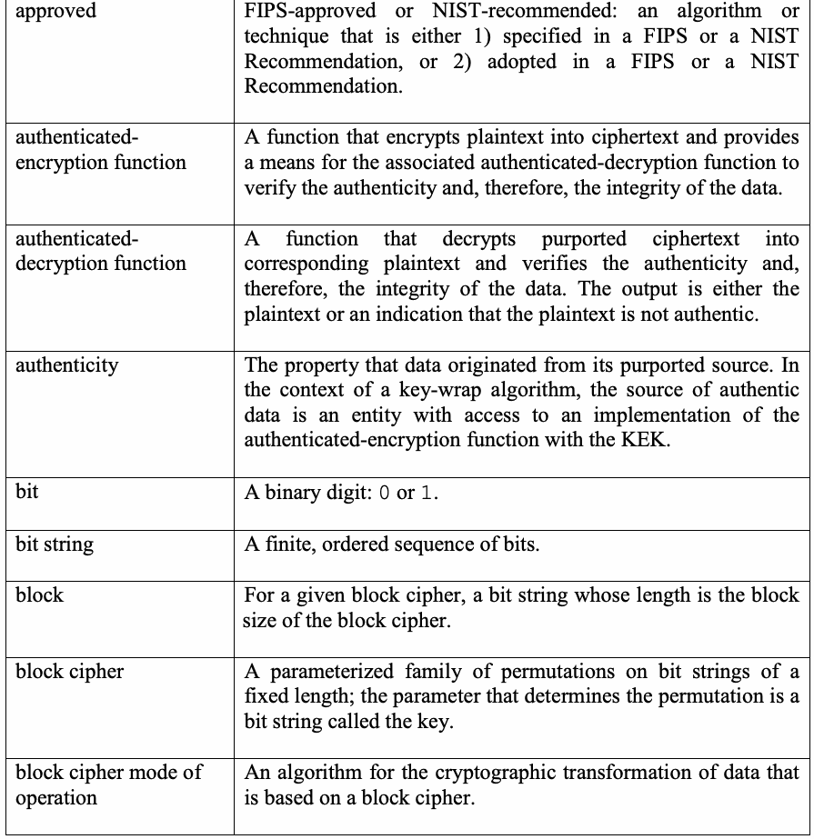
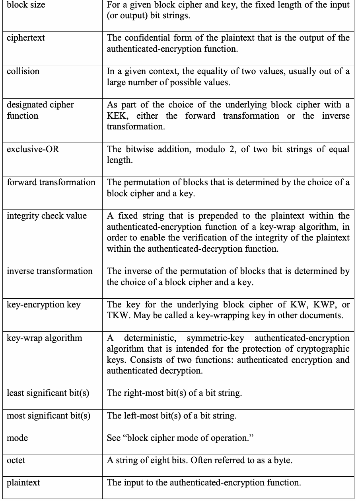
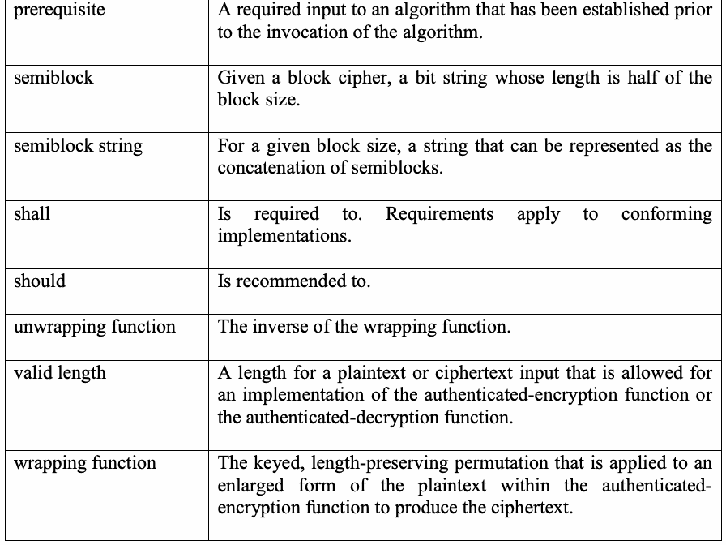
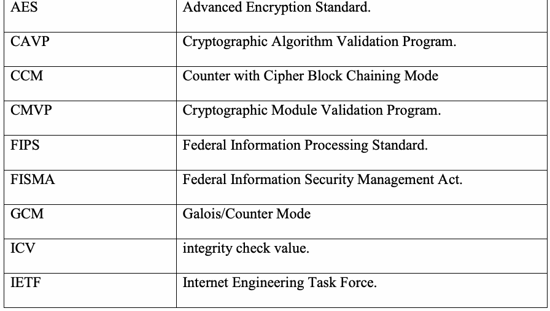
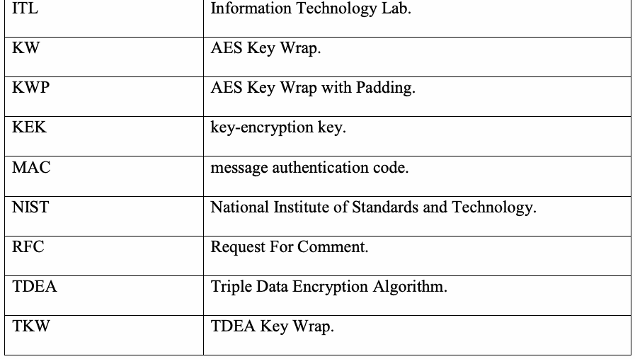
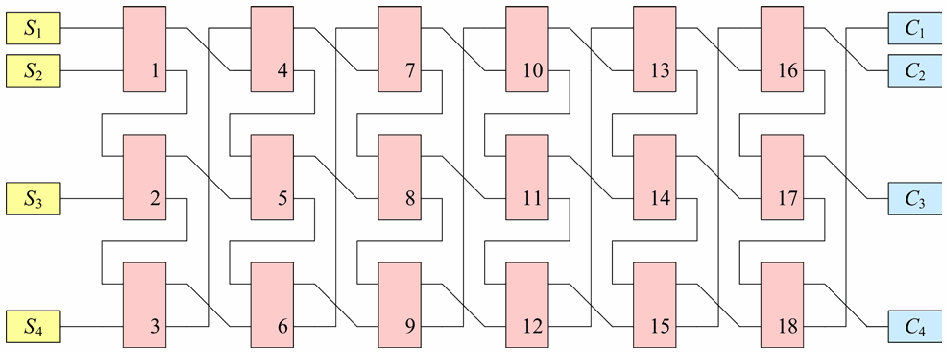
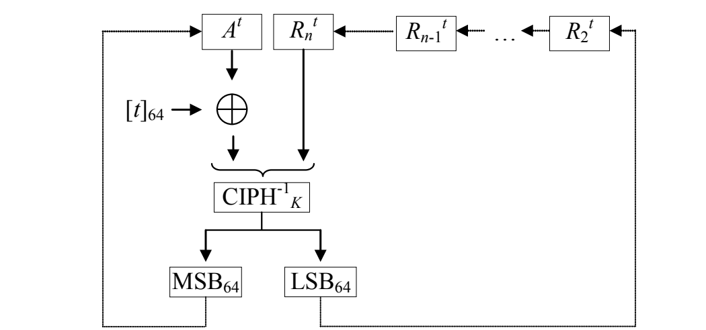

NIST SP 800-38F 日本語訳
英語タイトル : Recommendation for Block Cipher Modes of Operation: Methods for Key Wrapping日本語タイトル : 鍵ラッピング方式
公開日 : 2012-12-13
原文URL : https://csrc.nist.gov/pubs/sp/800/38/f/final
翻訳編集 : 自動生成
[要約] SP 800-38F は、暗号鍵の機密性と完全性を保護するための承認された方式である「鍵ラッピング」を説明する勧告です。AES の決定論的な認証付き暗号化の利用モードとして AES Key Wrap（KW）と AES Key Wrap With Padding（KWP）を新たに規定し、レガシーアプリケーション向けに TDEA を用いる TKW も規定します。データ長や呼出し回数の制限、適合性、セキュリティ上の考慮事項、関連アルゴリズムについても扱います。
有志による非公式の日本語訳です。NIST および米国商務省が作成・承認・推奨したものではありません。要件の確認にはNIST の正式版 PDFを参照してください。
Recommendation for Block Cipher Modes of Operation: Methods for Key Wrapping
ブロック暗号の利用モードに関する勧告：鍵ラッピング方式
NIST Special Publication 800-38F
NIST Special Publication 800-38F
December 2012
2012年12月
［NIST のロゴ。公的な標章のため、この非公式サイトには掲載していない。原本 PDF を参照。］
Morris Dworkin
Morris Dworkin
［NIST のロゴ。公的な標章のため、この非公式サイトには掲載していない。原本 PDF を参照。］
COMPUTER SECURITY
COMPUTER SECURITY
Recommendation for Block Cipher Modes of Operation: Methods for Key Wrapping
ブロック暗号の利用モードに関する勧告：鍵ラッピング方式
NIST Special Publication 800-38F
NIST Special Publication 800-38F
Morris Dworkin
Morris Dworkin
COMPUTER SECURITY
COMPUTER SECURITY
Computer Security Division Information Technology Laboratory National Institute of Standards and Technology Gaithersburg, MD 20899
コンピュータセキュリティ部門 情報技術研究所 国立標準技術研究所 米国メリーランド州ゲイザースバーグ 20899
December 2012
2012年12月
［米国商務省の紋章。公的な標章のため、この非公式サイトには掲載していない。原本 PDF を参照。］
U.S. Department of Commerce Rebecca M. Blank, Acting Secretary
米国商務省 Rebecca M. Blank（長官代行）
National Institute of Standards and Technology Patrick D. Gallagher, Director
国立標準技術研究所 Patrick D. Gallagher（所長）
Reports on Information Security Technology
情報セキュリティ技術に関する報告書
The Information Technology Laboratory (ITL) at the National Institute of Standards and Technology (NIST) promotes the U.S. economy and public welfare by providing technical leadership for the Nation’s measurement and standards infrastructure. ITL develops tests, test methods, reference data, proof of concept implementations, and technical analyses to advance the development and productive use of information technology. ITL’s responsibilities include the development of technical, physical, administrative, and management standards and guidelines for the cost-effective security and privacy of sensitive unclassified information in Federal computer systems. This Special Publication 800-series reports on ITL’s research, guidance, and outreach efforts in computer security, and its collaborative activities with industry, government, and academic organizations.
国立標準技術研究所（NIST）の情報技術研究所（ITL）は、米国の計測・標準インフラに技術的なリーダーシップを提供することで、米国経済と公共福祉の向上を促進する。ITLは、情報技術の開発と有効利用を進めるため、試験、試験方法、参照データ、概念実証実装、技術分析を開発する。ITLの責務には、連邦コンピュータシステムにおける機密扱いでない情報の、費用対効果の高いセキュリティおよびプライバシーのための、技術的、物理的、管理的、および運営管理上の標準と指針の策定が含まれる。このSP 800シリーズは、コンピュータセキュリティに関するITLの研究、指針、アウトリーチ活動、ならびに産業界、政府、学術機関との協働活動について報告するものである。
Certain commercial entities, equipment, or materials may be identified in this document in order to describe an experimental procedure or concept adequately. Such identification is not intended to imply recommendation or endorsement by the National Institute of Standards and Technology, nor is it intended to imply that the entities, materials, or equipment are necessarily the best available for the purpose.
この文書では、実験手順または概念を十分に説明するため、特定の商業主体、機器または材料を特定する場合がある。そのような特定は、国立標準技術研究所による推奨または承認を意味するものではなく、また当該主体、材料、機器が目的に対して必ず最良であることを意味しない。
National Institute of Standards and Technology Special Publication 800-38F Natl. Inst. Stand. Technol. Spec. Publ. 800-38F, 30 pages (December 2012)
国立標準技術研究所 特別刊行物800-38F、30ページ（2012年12月）
CODEN: NSPUE2
CODEN: NSPUE2
Acknowledgements
謝辞
The author wishes to thank his colleagues who reviewed drafts of this publication and contributed to its development, especially Elaine Barker, Meltem Turan, Allen Roginsky, Lily Chen, Donghoon Chang, Sharon Keller, Tim Polk, John Kelsey, Ray Perlner, Tim Hall, and Souradyuti Paul. Heather Pearce worked extensively on early drafts of this publication. Phillip Rogaway kindly provided Figure 1 from his paper analyzing key-wrap modes. The author also gratefully acknowledges the comments from the public and private sectors to improve the quality of this publication.
著者は、本刊行物の草案をレビューし、その作成に貢献した同僚に感謝する。特に Elaine Barker、Meltem Turan、Allen Roginsky、Lily Chen、Donghoon Chang、Sharon Keller、Tim Polk、John Kelsey、Ray Perlner、Tim Hall、Souradyuti Paul に感謝する。Heather Pearce は本刊行物の初期草案に多大な作業を行った。Phillip Rogaway は、鍵ラッピングモードを分析した自身の論文から図1を快く提供した。また著者は、本刊行物の品質を向上させるために寄せられた、官民双方からのコメントにも謝意を表する。
Abstract
概要
This publication describes cryptographic methods that are approved for “key wrapping,” i.e., the protection of the confidentiality and integrity of cryptographic keys. In addition to describing existing methods, this publication specifies two new, deterministic authenticated-encryption modes of operation of the Advanced Encryption Standard (AES) algorithm: the AES Key Wrap (KW) mode and the AES Key Wrap With Padding (KWP) mode. An analogous mode with the Triple Data Encryption Algorithm (TDEA) as the underlying block cipher, called TKW, is also specified, to support legacy applications.
本刊行物は、「鍵ラッピング」、すなわち暗号鍵の機密性および完全性の保護のために承認された暗号方式を説明する。既存の方式の説明に加え、本刊行物は、Advanced Encryption Standard（AES）アルゴリズムの、決定論的な認証付き暗号化の利用モードを2つ新たに規定する。AES Key Wrap（KW）モードと AES Key Wrap With Padding（KWP）モードである。また、レガシーアプリケーションをサポートするため、基礎となるブロック暗号として Triple Data Encryption Algorithm（TDEA）を用いる同様のモードであるTKWも規定する。
KEY WORDS: authenticated encryption; authentication; block cipher; computer security; confidentiality; cryptography; encryption; information security; key wrapping; mode of operation.
キーワード：認証付き暗号化、認証、ブロック暗号、コンピュータセキュリティ、機密性、暗号技術、暗号化、情報セキュリティ、鍵ラッピング、利用モード。
TABLE OF CONTENTS
目次
1 PURPOSE — 1
1 目的 — 1
2 AUTHORITY — 1
2 権限 — 1
3 INTRODUCTION — 1
3 はじめに — 1
3.1 OVERVIEW — 1
3.1 概要 — 1
3.2 RELATED SPECIFICATIONS — 2
3.2 関連仕様 — 2
4 DEFINITIONS AND NOTATION — 3
4 定義および表記 — 3
4.1 DEFINITIONS — 3
4.1 定義 — 3
4.2 ACRONYMS — 5
4.2 頭字語 — 5
4.3 VARIABLES — 6
4.3 変数 — 6
4.4 OPERATIONS AND FUNCTIONS — 6
4.4 操作および関数 — 6
4.5 EXAMPLES OF BASIC OPERATIONS AND FUNCTIONS ON STRINGS — 7
4.5 文字列に対する基本操作および関数の例 — 7
5 PRELIMINARIES — 8
5 予備事項 — 8
5.1 THE UNDERLYING BLOCK CIPHER AND KEY — 8
5.1 基礎となるブロック暗号と鍵 — 8
5.2 THE AUTHENTICATED-ENCRYPTION AND AUTHENTICATED-DECRYPTION FUNCTIONS — 9
5.2 認証付き暗号化関数および認証付き復号関数 — 9
5.3 LIMITS ON DATA LENGTH — 10
5.3 データ長の制限 — 10
5.3.1 Mandatory Limits — 10
5.3.1 必須の制限 — 10
5.3.2 Implementation-Specific Limits — 10
5.3.2 実装固有の制限 — 10
5.4 LIMITS ON THE NUMBER OF INVOCATIONS — 11
5.4 呼出し回数の制限 — 11
6 SPECIFICATIONS OF KW AND KWP — 11
6 KWおよびKWPの仕様 — 11
6.1 W AND W-1 — 11
6.1 WおよびW⁻¹ — 11
6.2 KW — 14
6.2 KW — 14
6.3 KWP — 15
6.3 KWP — 15
7 SPECIFICATION OF TKW — 16
7 TKWの仕様 — 16
7.1 TW AND TW-1 — 16
7.1 TWおよびTW⁻¹ — 16
7.2 TKW — 17
7.2 TKW — 17
8 CONFORMANCE — 18
8 適合性 — 18
APPENDIX A: SOME SECURITY CONSIDERATIONS — 19
付録A：セキュリティ上の考慮事項 — 19
A.1 EQUALITY OF PLAINTEXTS — 19
A.1 平文の同一性 — 19
A.2 IMPLIED STRENGTH OF PROTECTED KEYS — 19
A.2 保護される鍵の暗黙の強度 — 19
A.3 AUTHENTICATION ASSURANCE — 19
A.3 認証保証 — 19
A.4 FORGERIES OF EXTREMELY LONG MESSAGES — 20
A.4 極端に長いメッセージの偽造 — 20
A.5 ADDITIONAL ANALYSIS — 21
A.5 追加分析 — 21
APPENDIX B: RELATED ALGORITHMS — 22
付録B：関連アルゴリズム — 22
B.1 TECHNICAL DIFFERENCES WITH EARLIER SPECIFICATIONS OF KEY-WRAP ALGORITHMS — 22
B.1 以前の鍵ラッピングアルゴリズム仕様との技術的差異 — 22
B.2 COMPARISON OF FUNCTIONALITY WITH OTHER AUTHENTICATION METHODS — 22
B.2 他の認証方式との機能比較 — 22
REFERENCES — 24
参考文献 — 24
LIST OF TABLES AND FIGURES
表および図の一覧
Table 1: Summary of Limits on Data Length ............................................................................... 10
表1：データ長の制限の概要 — 10
Figure 1: Illustration of the wrapping function, W....................................................................... 12 Figure 2: Illustration of an iteration within Step 2 of Algorithm 1............................................... 12 Figure 3: Illustration of an iteration within Step 2 of Algorithm 2............................................... 13
図1：ラッピング関数 W の図示 — 12 図2：アルゴリズム1のステップ2における反復の図示 — 12 図3：アルゴリズム2のステップ2における反復の図示 — 13
1 Purpose
1 目的
This publication is the sixth part in a series of Recommendations regarding the modes of operation of block ciphers. The purpose of this part is to provide approved methods for key wrapping, i.e., the protection of cryptographic keys.
本刊行物は、ブロック暗号の利用モードに関する一連の勧告の第6部である。本編の目的は、鍵ラッピング、すなわち暗号鍵の保護のための承認方式を示すことにある。
2 Authority
2 権限
This publication has been developed by the National Institute of Standards and Technology (NIST) in furtherance of its statutory responsibilities under the Federal Information Security Management Act (FISMA) of 2002, Public Law 107-347.
本刊行物は、2002年連邦情報セキュリティマネジメント法（FISMA）、公法107-347に基づく法定責務を果たすため、国立標準技術研究所（NIST）が策定した。
NIST is responsible for developing standards and guidelines, including minimum requirements for federal information systems, but such standards and guidelines shall not apply to national security systems.
NISTは、連邦情報システムの最低要件を含む標準および指針の策定に責任を負うが、そのような標準および指針は国家安全保障システムには適用されない。
This recommendation has been prepared for use by Federal agencies. It may be used by nongovernmental organizations on a voluntary basis and is not subject to copyright. (Attribution would be appreciated by NIST.)
本勧告は連邦機関による使用を目的として作成された。非政府組織も任意に使用でき、著作権の対象ではない（NISTへの帰属表示は歓迎する）。
Nothing in this publication should be taken to contradict the standards and guidelines made mandatory and binding on federal agencies by the Secretary of Commerce under statutory authority. Nor should these guidelines be interpreted as altering or superseding the existing authorities of the Secretary of Commerce, Director of the OMB, or any other federal official.
本刊行物のいかなる内容も、法的権限に基づき商務長官が連邦機関に義務付け、拘束力を持たせた標準および指針に反するものと解釈すべきではない。また、本指針は商務長官、行政管理予算局（OMB）長官、その他の連邦職員の既存の権限を変更または無効にするものと解釈すべきではない。
Conformance testing for implementations of this Recommendation will be conducted within the framework of the Cryptographic Algorithm Validation Program (CAVP) and the Cryptographic Module Validation Program (CMVP). The requirements of this Recommendation are indicated by the word “shall.” Some of these requirements may be out-of-scope for CMVP or CAVP validation testing, and thus are the responsibility of entities using, implementing, installing, or configuring applications that incorporate this Recommendation.
本勧告の実装に対する適合性試験は、暗号アルゴリズム検証プログラム（CAVP）および暗号モジュール検証プログラム（CMVP）の枠組みで実施する。本勧告の要件は「shall」という語で示す。要件の一部はCMVPまたはCAVPの検証試験の範囲外となる場合があり、その場合は本勧告を組み込むアプリケーションを使用、実装、設置または構成する主体の責任となる。
3 Introduction
3 はじめに
3.1 Overview
3.1 概要
This Recommendation specifies a deterministic authenticated-encryption mode of operation of the Advanced Encryption Standard (AES) block cipher [3]. The mode is called AES Key Wrap, abbreviated as KW in this Recommendation. Although KW can be used in conjunction with any reversible padding scheme, a variant of KW with an internal padding scheme is also specified to promote interoperability. This variant is called AES Key Wrap With Padding, abbreviated as KWP. The analogue of KW with the Triple Data Encryption Algorithm (TDEA) [5] as the underlying block cipher is also specified, to support legacy applications. This analogue is called Triple DEA Key Wrap, abbreviated as TKW.
本勧告は、Advanced Encryption Standard（AES）ブロック暗号[3]の決定論的な認証付き暗号化利用モードを規定する。本勧告ではこれをAES Key Wrap（KW）と呼ぶ。KWは任意の可逆パディング方式と組み合わせて使用できるが、相互運用性を促進するため、内部パディング方式を持つKWの変種も規定する。これをAES Key Wrap With Padding（KWP）と呼ぶ。また、レガシーアプリケーションを支援するため、基礎ブロック暗号にTriple Data Encryption Algorithm（TDEA）[5]を用いるKWの類似方式も規定する。これをTriple DEA Key Wrap（TKW）と呼ぶ。
KW, KWP, and TKW were designed to protect the confidentiality and the authenticity/integrity of cryptographic keys. Each provides an option for protecting keys in a manner that is distinct from the methods that protect general data. Segregating keys from general data can provide an extra layer of protection.
KW、KWP、TKWは、暗号鍵の機密性および真正性／完全性を保護するために設計された。各方式は一般データの保護方式とは異なる形で鍵を保護する選択肢を提供する。鍵を一般データから分離することで、保護をさらに一層強化できる。
Nevertheless, there is no requirement to protect cryptographic keys with a distinct cryptographic method. Previously approved authenticated-encryption modes—as well as combinations of an approved encryption mode with an approved authentication method—are approved for the protection of cryptographic keys, in addition to general data.
ただし、暗号鍵を別個の暗号方式で保護する要件はない。以前に承認された認証付き暗号化モード、および承認済み暗号化モードと承認済み認証方式の組合せは、一般データに加え暗号鍵の保護にも承認されている。
Similarly, KW, KWP, and TKW are each approved for the protection of general data, as well as cryptographic keys.
KW、KWP、TKWはいずれも、暗号鍵だけでなく一般データの保護にも承認されている。
KW, KWP, and TKW are each robust in the sense that each bit of output can be expected to depend in a nontrivial fashion on each bit of input, even when the length of the input data is greater than one block. This property is achieved at the cost of a considerably lower throughput rate, compared to other authenticated-encryption modes, but the tradeoff may be appropriate for some key management applications. For example, a robust method may be desired when the length of the keys to be protected is greater than the block size of the underlying block cipher, or when the value of the protected data is very high.
KW、KWP、TKWはいずれも堅牢であり、入力データが1ブロックを超える長さでも、出力の各ビットは入力の各ビットに実質的に依存すると期待できる。この性質は、他の認証付き暗号化モードに比べてスループットが大幅に低くなる代償を伴うが、一部の鍵管理用途ではその交換条件が適切な場合がある。例えば、保護する鍵が基礎ブロック暗号のブロックサイズを超える場合や、保護対象データの価値が非常に高い場合には、堅牢な方式が望まれることがある。
3.2 Related Specifications
3.2 関連仕様
Earlier specifications of key-wrap algorithms1 that are related to KW, KWP, and TKW are discussed in this subsection.
KW、KWP、TKWに関連する以前の鍵ラッピングアルゴリズム仕様1を本節で説明する。
In 2001, NIST posted a document entitled “AES Key Wrap Specification” on NIST’s Computer Security Resource Center web site as an unofficial suggestion for the protection of cryptographic keys. That algorithm is essentially equivalent to KW as specified in this Recommendation.
2001年、NISTは暗号鍵保護の非公式な提案として「AES Key Wrap Specification」と題する文書をNIST Computer Security Resource Centerのウェブサイトに掲載した。このアルゴリズムは、本勧告で規定するKWと実質的に同等である。
In 2002, two industry groups published specifications of key-wrap algorithms that were based on the specification that NIST posted. First, the Internet Engineering Task Force (IETF) developed an essentially equivalent specification in Request For Comments (RFC) 3394 [11]. Second, the Telecommunications Industry Association published a protocol for Digital Radio Over-the-Air-Rekeying [1] containing a “Key Wrap Algorithm” that supported TDEA, in addition to the AES block cipher. Those algorithms are essentially equivalent to KW and TKW as specified in this Recommendation.
2002年、2つの業界団体がNIST掲載仕様に基づく鍵ラッピングアルゴリズム仕様を公表した。まずInternet Engineering Task Force（IETF）が実質的に同等の仕様を開発し、Request For Comments（RFC）3394 [11]として公表した。次にTelecommunications Industry AssociationはDigital Radio Over-the-Air-Rekeying用プロトコル[1]を公表し、AESに加えてTDEAもサポートする「Key Wrap Algorithm」を含めた。これらのアルゴリズムは、本勧告のKWおよびTKWと実質的に同等である。
In 2008, Accredited Standards Committee X9, Inc., published a key-wrap standard for the financial services industry [2]. The variant of KW in that standard features a more general framework for formatting the input data, including a padding scheme, as well as an analogue with TDEA as the underlying block cipher.
2008年、Accredited Standards Committee X9, Inc.は金融サービス業界向け鍵ラッピング標準[2]を公表した。同標準のKW変種は、パディング方式を含む、入力データ形式のより一般的な枠組みを備え、基礎ブロック暗号にTDEAを用いる類似方式も含む。
In 2009, a different padding scheme was specified in RFC 5649 [4], referencing elements of the specification in [11]. The resulting algorithm, called AES Key Wrap With Padding, is essentially equivalent to KWP as specified in this Recommendation.
2009年、RFC 5649 [4]で別のパディング方式が規定され、[11]の仕様の要素が参照された。その結果のアルゴリズム AES Key Wrap With Padding は、本勧告のKWPと実質的に同等である。
The differences between KW, KWP, and TKW as specified in this Recommendation and their earlier specifications are described in Appendix B.1.
本勧告のKW、KWP、TKWと以前の仕様との相違点は付録B.1で説明する。
4 Definitions and Notation
4 定義および表記
4.1 Definitions
4.1 定義
| approved | FIPS-approved or NIST-recommended: an algorithm or technique that is either 1) specified in a FIPS or a NIST Recommendation, or 2) adopted in a FIPS or a NIST Recommendation. |
| authenticated-encryption function | A function that encrypts plaintext into ciphertext and provides a means for the associated authenticated-decryption function to verify the authenticity and, therefore, the integrity of the data. |
| authenticated-decryption function | A function that decrypts purported ciphertext into corresponding plaintext and verifies the authenticity and, therefore, the integrity of the data. The output is either the plaintext or an indication that the plaintext is not authentic. |
| authenticity | The property that data originated from its purported source. In the context of a key-wrap algorithm, the source of authentic data is an entity with access to an implementation of the authenticated-encryption function with the KEK. |
| bit | A binary digit: 0 or 1. |
| bit string | A finite, ordered sequence of bits. |
| block | For a given block cipher, a bit string whose length is the block size of the block cipher. |
| block cipher | A parameterized family of permutations on bit strings of a fixed length; the parameter that determines the permutation is a bit string called the key. |
| block cipher mode of operation | An algorithm for the cryptographic transformation of data that is based on a block cipher. |
原本PDFの抜粋画像

| 承認済み | FIPSで承認、またはNISTが推奨するもの。FIPSまたはNIST勧告で規定されている、あるいは採用されているアルゴリズムまたは技法。 |
| 認証付き暗号化関数 | 平文を暗号化して暗号文にし、対応する認証付き復号関数がデータの真正性、したがって完全性を検証できる手段を提供する関数。 |
| 認証付き復号関数 | 暗号文とされる入力を対応する平文に復号し、データの真正性、したがって完全性を検証する関数。出力は平文、または平文が真正でないことを示す値のいずれか。 |
| 真正性 | データが主張された送信元から発生したという性質。鍵ラッピングアルゴリズムでは、真正なデータの送信元はKEKを用いる認証付き暗号化関数の実装にアクセスできる主体である。 |
| ビット | 2進数字：0または1。 |
| ビット列 | 有限で順序付けられたビットの並び。 |
| ブロック | 所与のブロック暗号について、そのブロックサイズと同じ長さのビット列。 |
| ブロック暗号 | 固定長ビット列上の置換から成るパラメータ化された族。置換を決定するパラメータは鍵と呼ばれるビット列。 |
| ブロック暗号利用モード | ブロック暗号に基づくデータの暗号変換アルゴリズム。 |
| block size | For a given block cipher and key, the fixed length of the input (or output) bit strings. |
| ciphertext | The confidential form of the plaintext that is the output of the authenticated-encryption function. |
| collision | In a given context, the equality of two values, usually out of a large number of possible values. |
| designated cipher function | As part of the choice of the underlying block cipher with a KEK, either the forward transformation or the inverse transformation. |
| exclusive-OR | The bitwise addition, modulo 2, of two bit strings of equal length. |
| forward transformation | The permutation of blocks that is determined by the choice of a block cipher and a key. |
| integrity check value | A fixed string that is prepended to the plaintext within the authenticated-encryption function of a key-wrap algorithm, in order to enable the verification of the integrity of the plaintext within the authenticated-decryption function. |
| inverse transformation | The inverse of the permutation of blocks that is determined by the choice of a block cipher and a key. |
| key-encryption key | The key for the underlying block cipher of KW, KWP, or TKW. May be called a key-wrapping key in other documents. |
| key-wrap algorithm | A deterministic, symmetric-key authenticated-encryption algorithm that is intended for the protection of cryptographic keys. Consists of two functions: authenticated encryption and authenticated decryption. |
| least significant bit(s) | The right-most bit(s) of a bit string. |
| most significant bit(s) | The left-most bit(s) of a bit string. |
| mode | See “block cipher mode of operation.” |
| octet | A string of eight bits. Often referred to as a byte. |
| plaintext | The input to the authenticated-encryption function. |
原本PDFの抜粋画像

| ブロックサイズ | 所与のブロック暗号と鍵について、入力（または出力）ビット列の固定長。 |
| 暗号文 | 認証付き暗号化関数の出力である、平文の機密化された形式。 |
| 衝突 | 特定の文脈における2つの値の一致。通常、多数の可能値から生じる。 |
| 指定暗号関数 | KEKと基礎ブロック暗号を選択する際に指定する、順変換または逆変換のいずれか。 |
| 排他的論理和 | 同じ長さの2つのビット列をビットごとに2を法として加算する演算。 |
| 順変換 | ブロック暗号および鍵の選択によって決まるブロックの置換。 |
| 完全性検査値 | 鍵ラッピングアルゴリズムの認証付き暗号化関数で平文の前に付加し、認証付き復号関数で平文の完全性を検証できるようにする固定文字列。 |
| 逆変換 | ブロック暗号および鍵の選択によって決まるブロック置換の逆。 |
| 鍵暗号化鍵 | KW、KWPまたはTKWの基礎ブロック暗号に用いる鍵。他文書では鍵ラッピング鍵と呼ぶことがある。 |
| 鍵ラッピングアルゴリズム | 暗号鍵の保護を目的とする決定論的な共通鍵認証付き暗号化アルゴリズム。認証付き暗号化と認証付き復号の2関数から成る。 |
| 最下位ビット | ビット列の右端のビット。 |
| 最上位ビット | ビット列の左端のビット。 |
| モード | 「ブロック暗号利用モード」を参照。 |
| オクテット | 8ビットから成る文字列。バイトとも呼ばれる。 |
| 平文 | 認証付き暗号化関数への入力。 |
| prerequisite | A required input to an algorithm that has been established prior to the invocation of the algorithm. |
| semiblock | Given a block cipher, a bit string whose length is half of the block size. |
| semiblock string | For a given block size, a string that can be represented as the concatenation of semiblocks. |
| shall | Is required to. Requirements apply to conforming implementations. |
| should | Is recommended to. |
| unwrapping function | The inverse of the wrapping function. |
| valid length | A length for a plaintext or ciphertext input that is allowed for an implementation of the authenticated-encryption function or the authenticated-decryption function. |
| wrapping function | The keyed, length-preserving permutation that is applied to an enlarged form of the plaintext within the authenticated-encryption function to produce the ciphertext. |
原本PDFの抜粋画像

| 事前条件 | アルゴリズムの呼出し前に確立されている必要入力。 |
| セミブロック | 所与のブロック暗号について、ブロックサイズの半分の長さを持つビット列。 |
| セミブロック列 | 所与のブロックサイズについて、セミブロックを連結して表せる文字列。 |
| shall | 必須である。適合実装に要件を課す。 |
| should | 推奨される。 |
| アンラッピング関数 | ラッピング関数の逆関数。 |
| 有効長 | 認証付き暗号化関数または認証付き復号関数の実装が許容する平文または暗号文入力の長さ。 |
| ラッピング関数 | 認証付き暗号化関数で平文を拡張した形式に適用し、暗号文を生成する、鍵付きで長さを保つ置換。 |
4.2 Acronyms
4.2 頭字語
| AES | Advanced Encryption Standard. |
| CAVP | Cryptographic Algorithm Validation Program. |
| CCM | Counter with Cipher Block Chaining Mode |
| CMVP | Cryptographic Module Validation Program. |
| FIPS | Federal Information Processing Standard. |
| FISMA | Federal Information Security Management Act. |
| GCM | Galois/Counter Mode |
| ICV | integrity check value. |
| IETF | Internet Engineering Task Force. |
原本PDFの抜粋画像

| AES | Advanced Encryption Standard（高度暗号化標準）。 |
| CAVP | 暗号アルゴリズム検証プログラム。 |
| CCM | Counter with Cipher Block Chaining Mode（カウンタ・暗号ブロック連鎖モード）。 |
| CMVP | 暗号モジュール検証プログラム。 |
| FIPS | 連邦情報処理標準。 |
| FISMA | 連邦情報セキュリティマネジメント法。 |
| GCM | Galois/Counter Mode。 |
| ICV | 完全性検査値。 |
| IETF | Internet Engineering Task Force。 |
| ITL | Information Technology Lab. |
| KW | AES Key Wrap. |
| KWP | AES Key Wrap with Padding. |
| KEK | key-encryption key. |
| MAC | message authentication code. |
| NIST | National Institute of Standards and Technology. |
| RFC | Request For Comment. |
| TDEA | Triple Data Encryption Algorithm. |
| TKW | TDEA Key Wrap. |
原本PDFの抜粋画像

| ITL | 情報技術研究所。 |
| KW | AES鍵ラッピング。 |
| KWP | パディング付きAES鍵ラッピング。 |
| KEK | 鍵暗号化鍵。 |
| MAC | メッセージ認証コード。 |
| NIST | 国立標準技術研究所。 |
| RFC | Request for Comments（コメント募集文書）。 |
| TDEA | Triple Data Encryption Algorithm。 |
| TKW | TDEA鍵ラッピング。 |
4.3 Variables
4.3 変数
| Symbol | Meaning |
| C | The ciphertext. |
| ICV1 | The 64-bit default ICV for KW: 0xA6A6A6A6A6A6A6A6. |
| ICV2 | The 32-bit default ICV for KWP: 0xA65959A6. |
| ICV3 | The 32-bit default ICV for TKW: 0xA6A6A6A6. |
| P | The plaintext. |
| 記号 | 意味 |
| C | 暗号文。 |
| ICV1 | KWの64ビット既定ICV：0xA6A6A6A6A6A6A6A6。 |
| ICV2 | KWPの32ビット既定ICV：0xA65959A6。 |
| ICV3 | TKWの32ビット既定ICV：0xA6A6A6A6。 |
| P | 平文。 |
4.4 Operations and Functions
4.4 操作および関数
| Notation | Meaning |
| 0s | The bit string that consists of s consecutive “0” bits. |
| CIPHK(X) | The output of the designated cipher function of the block cipher under the key K applied to the block X. |
| CIPH−1K(X) | The output of the inverse of the designated cipher function of the block cipher under the key K applied to the block X. |
| int(X) | The integer for which the bit string X is a binary representation. |
| len(X) | The bit length of the bit string X. |
| LSBs(X) | The bit string consisting of the s right-most bits of the bit string X. |
| MSBs(X) | The bit string consisting of the s left-most bits of the bit string X. |
| TW(S) | The output of the wrapping function for TKW applied to the string S. |
| TW−1(C) | The output of the unwrapping function for TKW applied to the string C. |
| W(S) | The output of the wrapping function for KW and KWP applied to the bit string S. |
| W−1(C) | The output of the unwrapping function for KW and KWP applied to the bit string C. |
| ⌈x⌉ | The least integer that is not less than the real number x. |
| [x]s | The binary representation of the non-negative integer x as a string of s bits, where x < 2s. |
| X ⊕ Y | The bitwise exclusive-OR of bit strings X and Y whose bit lengths are equal. |
| X || Y | The concatenation of bit strings X and Y. |
| 0x | The marker for the beginning of a hexadecimal representation of a bit string. |
| 表記 | 意味 |
| 0s | s個の「0」ビットが連続するビット列。 |
| CIPHK(X) | 鍵Kの下でブロックXに適用したブロック暗号の指定暗号関数の出力。 |
| CIPH−1K(X) | 鍵Kの下でブロックXに適用したブロック暗号の指定暗号関数の逆関数の出力。 |
| int(X) | ビット列Xを2進表現とする整数。 |
| len(X) | ビット列Xのビット長。 |
| LSBs(X) | ビット列Xの右端sビットからなるビット列。 |
| MSBs(X) | ビット列Xの左端sビットからなるビット列。 |
| TW(S) | 文字列Sに適用したTKWのラッピング関数の出力。 |
| TW−1(C) | 文字列Cに適用したTKWのアンラッピング関数の出力。 |
| W(S) | ビット列Sに適用したKWおよびKWPのラッピング関数の出力。 |
| W−1(C) | ビット列Cに適用したKWおよびKWPのアンラッピング関数の出力。 |
| ⌈x⌉ | 実数x以上となる最小の整数。 |
| [x]s | 非負整数xをsビット列として表す2進表現。ただしx < 2s。 |
| X ⊕ Y | ビット長が等しいビット列XおよびYのビット単位の排他的論理和。 |
| X || Y | ビット列XとYの連結。 |
| 0x | ビット列の16進表記の開始を示す記号。 |
4.5 Examples of Basic Operations and Functions on Strings
4.5 文字列に対する基本操作および関数の例
In this publication, the new courier font indicates the ‘\(\mathtt{0}\)’ bit, the ‘\(\mathtt{1}\)’ bit, and any hexadecimal symbols: \(\mathtt{0}\), \(\mathtt{1}\), …, \(\mathtt{9}\), \(\mathtt{A}\), \(\mathtt{B}\), \(\mathtt{C}\), \(\mathtt{D}\), \(\mathtt{E}\), \(\mathtt{F}\).
The beginning of a hexadecimal representation of a string is marked by ‘0x.’ For example, \(\mathrm{0x}\mathtt{A659} = \mathtt{1010011001011001}\).
Given a real number \(x\), the ceiling function, denoted \(\lceil x \rceil\), is the least integer that is not less than \(x\). For example, \(\lceil 2.1 \rceil = 3\), and \(\lceil 4 \rceil = 4\).
Given a positive integer \(s\), \(\mathtt{0}^{s}\) denotes the string that consists of \(s\) ‘\(\mathtt{0}\)’ bits. For example, \(\mathtt{0}^{8} = \mathtt{00000000}\).
The concatenation operation on bit strings is denoted \(\parallel\). For example, \(\mathtt{001} \parallel \mathtt{10111} = \mathtt{00110111}\).
Given bit strings of equal length, the exclusive-OR (XOR) operation, denoted \(\oplus\), specifies the addition, modulo 2, of the bits in corresponding bit positions. For example, \(\mathtt{10011} \oplus \mathtt{10101} = \mathtt{00110}\).
本書では、new courierフォントは「\(\mathtt{0}\)」ビット、「\(\mathtt{1}\)」ビットおよび任意の16進記号 \(\mathtt{0}\)、\(\mathtt{1}\)、…、\(\mathtt{9}\)、\(\mathtt{A}\)、\(\mathtt{B}\)、\(\mathtt{C}\)、\(\mathtt{D}\)、\(\mathtt{E}\)、\(\mathtt{F}\) を表す。
文字列の16進表記の先頭は「0x」で示す。例えば、\(\mathrm{0x}\mathtt{A659} = \mathtt{1010011001011001}\) である。
実数 \(x\) に対し、天井関数 \(\lceil x \rceil\) は \(x\) 以上である最小の整数を表す。例えば、\(\lceil 2.1 \rceil = 3\)、\(\lceil 4 \rceil = 4\) である。
正の整数 \(s\) に対し、\(\mathtt{0}^{s}\) は \(s\) 個の「\(\mathtt{0}\)」ビットからなる文字列を表す。例えば、\(\mathtt{0}^{8} = \mathtt{00000000}\) である。
ビット列の連結演算を \(\parallel\) と表す。例えば、\(\mathtt{001} \parallel \mathtt{10111} = \mathtt{00110111}\) である。
同じ長さのビット列に対する排他的論理和（XOR）演算を \(\oplus\) と表し、対応するビット位置のビットを法2で加算する。例えば、\(\mathtt{10011} \oplus \mathtt{10101} = \mathtt{00110}\) である。
Given a bit string \(X\), the bit length of \(X\) is denoted \(\operatorname{len}(X)\). For example, \(\operatorname{len}(\mathtt{00010}) = 5\).
Given a bit string \(X\) and a non-negative integer \(s\) such that \(\operatorname{len}(X) \ge s\), the functions \(\mathrm{LSB}_{s}(X)\) and \(\mathrm{MSB}_{s}(X)\) return the \(s\) least significant (right-most) bits and the \(s\) most significant (left-most) bits, respectively, of \(X\). For example, \(\mathrm{LSB}_{3}(\mathtt{111011010}) = \mathtt{010}\), and \(\mathrm{MSB}_{4}(\mathtt{111011010}) = \mathtt{1110}\).
Given a positive integer \(s\) and a non-negative integer \(x\) that is less than \(2^{s}\), the integer-to-string function, denoted \([x]_{s}\), is the binary representation of \(x\) as a string of bit length \(s\) with the least significant bit on the right. For example, for the (base 10) integer 39, the binary representation (base 2) is \(\mathtt{100111}\), so \([39]_{8} = \mathtt{00100111}\).
Given a (non-empty) bit string \(X\), the string-to-integer function, denoted \(\operatorname{int}(X)\), is the integer \(x\) such that \([x]_{\operatorname{len}(X)} = X\). In other words, \(\operatorname{int}(X)\) is the non-negative integer less than \(2^{\operatorname{len}(X)}\) whose binary representation is \(X\). For example, \(\operatorname{int}(\mathtt{00011010}) = 26\).
ビット列 \(X\) が与えられたとき、\(X\) のビット長を \(\operatorname{len}(X)\) と表す。例えば、\(\operatorname{len}(\mathtt{00010}) = 5\) である。
ビット列 \(X\) と非負整数 \(s\) が \(\operatorname{len}(X) \ge s\) を満たすとき、関数 \(\mathrm{LSB}_{s}(X)\) および \(\mathrm{MSB}_{s}(X)\) は、それぞれ最下位（右端）の \(s\) ビットと最上位（左端）の \(s\) ビットを \(X\) から取り出して返す。例えば、\(\mathrm{LSB}_{3}(\mathtt{111011010}) = \mathtt{010}\)、\(\mathrm{MSB}_{4}(\mathtt{111011010}) = \mathtt{1110}\) である。
正の整数 \(s\) と、非負整数 \(x\) で \(2^{s}\) 未満のものに対し、整数から文字列への関数 \([x]_{s}\) は、\(x\) の2進表現を、ビット長 \(s\) の文字列として最下位ビットを右端に置いて表したものである。例えば、（10進の）整数39の2進表現は \(\mathtt{100111}\) なので、\([39]_{8} = \mathtt{00100111}\) である。
（空でない）ビット列 \(X\) に対し、文字列から整数への関数 \(\operatorname{int}(X)\) は、整数 \(x\) であって \([x]_{\operatorname{len}(X)} = X\) を満たすものである。つまり、\(\operatorname{int}(X)\) は \(2^{\operatorname{len}(X)}\) 未満の非負整数であって、2進表現が \(X\) であるものである。例えば、\(\operatorname{int}(\mathtt{00011010}) = 26\) である。
5 Preliminaries
5 予備事項
5.1 The Underlying Block Cipher and Key
5.1 基礎となるブロック暗号と鍵
The transformations of the variants of KW feature a block cipher as the main component; thus, each variant is a mode of operation (mode, for short) of the block cipher. The key for the underlying block cipher is called the key encryption key (KEK), denoted \(K\).
KWの各変種の変換ではブロック暗号が主要な構成要素となる。したがって、各変種はブロック暗号の利用モード（以下、モード）である。基礎となるブロック暗号の鍵を鍵暗号化鍵（KEK）と呼び、\(K\) と表す。
For any given KEK, the underlying block cipher of the mode is a permutation, i.e., an invertible transformation on bit strings of a fixed length. In this publication, the transformation is called the forward transformation, and its inverse is called the inverse transformation. The strings are called blocks, and the length of a block is called the block size. As part of the choice of the underlying block cipher with the KEK, either the forward transformation or the inverse transformation is specified as the designated cipher function, denoted \(\mathrm{CIPH}_K\). The inverse of \(\mathit{CIPH}_K\) is denoted \(\mathrm{CIPH}^{-1}_K\).
KEKごとに、モードの基礎となるブロック暗号は置換、すなわち固定長ビット列上の可逆変換である。本書では変換を順変換、その逆を逆変換と呼ぶ。ビット列をブロック、ブロックの長さをブロックサイズと呼ぶ。KEKと基礎ブロック暗号を選択する際、順変換または逆変換のいずれかを指定暗号関数として指定し、\(\mathrm{CIPH}_K\)と表す。\(\mathit{CIPH}_K\)の逆関数を\(\mathrm{CIPH}^{-1}_K\)と表す。
For example, the forward and inverse transformations for the AES block cipher—called “cipher” and “inverse cipher” in [3]—are informally known as the AES encryption and AES decryption functions, respectively. If the designated cipher function for a key-wrap algorithm is chosen to be the AES decryption function, then \(\mathrm{CIPH}^{-1}_K\) will be the AES encryption function.
例えば、AESブロック暗号の順変換および逆変換は、[3]ではそれぞれ「cipher」および「inverse cipher」と呼ばれるが、非公式にはそれぞれAES暗号化関数およびAES復号関数として知られている。鍵ラッピングアルゴリズムの指定暗号関数としてAES復号関数を選んだ場合、\(\mathrm{CIPH}^{-1}_K\) はAES暗号化関数となる。
For KW and KWP, the underlying block cipher shall be approved, and the block size shall be 128 bits. Currently, the AES block cipher, with key lengths of 128, 192, or 256 bits, is the only block cipher that fits this profile. For TKW, the underlying block cipher is specified to be TDEA, and the block size is therefore 64 bits; the KEK for TKW may have any length for which TDEA is approved; see [8].
KWおよびKWPでは、基礎となるブロック暗号は承認済みでなければならず、ブロックサイズは128ビットでなければならない。現在、この条件に適合するブロック暗号は、鍵長128、192、または256ビットのAESのみである。TKWでは基礎ブロック暗号をTDEAと規定するため、ブロックサイズは64ビットとなる。TKWのKEKは、TDEAで承認される任意の長さを使用してよい。[8]参照。
The length of the KEK affects the security of the algorithms against brute force search, but this length will not be explicitly indicated in the specifications. Methods for generating cryptographic keys are discussed in [9]; the goal is to select the keys uniformly at random, i.e., for each possible key to occur with equal probability.
KEKの長さは、総当たり探索に対するアルゴリズムの安全性に影響するが、仕様ではこの長さを明示しない。暗号鍵の生成方法は[9]で説明されている。各鍵が等しい確率で選ばれるよう、一様ランダムに鍵を選択することが目標である。
The KEK shall be secret, i.e., disclosed only to parties that are authorized to know the protected information. Compliance with this requirement is the responsibility of the entities using, implementing, installing, or configuring applications that incorporate this Recommendation. The management of KEKs is outside the scope of this publication.
KEKは秘密にしておかなければならない。すなわち、保護対象情報を知る権限を持つ当事者だけに開示する。本要件への適合は、本勧告を組み込むアプリケーションを使用、実装、設置または構成する主体の責任である。KEKの管理は本刊行物の対象外である。
5.2 The Authenticated-Encryption and Authenticated-Decryption Functions
5.2 認証付き暗号化関数および認証付き復号関数
For a given KEK and block cipher, KW, KWP, and TKW each comprise two related functions: authenticated encryption and authenticated decryption. The authenticated-encryption function takes an input string, called the plaintext, denoted \(P\), and returns a longer output string, called the ciphertext, denoted \(C\). The authenticated-encryption function expands the data so that only a small fraction of all possible strings of any given length can be ciphertexts.
所与のKEKとブロック暗号に対し、KW、KWP、TKWはいずれも関連する2つの関数、すなわち認証付き暗号化と認証付き復号から成る。認証付き暗号化関数は、平文と呼び\(P\)と表す入力文字列を取り、暗号文と呼び\(C\)と表す、より長い出力文字列を返す。認証付き暗号化関数はデータを拡張するため、任意の所与の長さのすべての文字列のうち、暗号文となり得るものはごく一部に限られる。
The authenticated-decryption function takes an input string, called the purported ciphertext, and returns either 1) an output string or 2) a special symbol, denoted FAIL. In the first case, the output string is the unique plaintext that corresponds to the purported ciphertext, so the ciphertext should be regarded as authentic; the nature of the resulting assurance is described in Appendix A.3.
認証付き復号関数は「暗号文とされる」入力文字列を取り、1) 出力文字列または2) FAILと表す特別な記号のいずれかを返す。前者の場合、出力文字列は当該暗号文とされる文字列に対応する一意の平文であるため、その暗号文は真正と見なすべきである。保証の性質は付録A.3で説明する。
For KW, the authenticated-encryption function and the authenticated-decryption function are denoted KW-AE and KW-AD; for KWP, the functions are denoted KWP-AE and KWP-AD; for TKW, the functions are denoted TKW-AE and TKW-AD.
KWでは認証付き暗号化関数と認証付き復号関数をKW-AEおよびKW-AD、KWPではKWP-AEおよびKWP-AD、TKWではTKW-AEおよびTKW-ADと表す。
Note that, although the KEK, K, is a parameter for each of these six functions, in the specifications of these functions in this Recommendation, the KEK is considered to be a prerequisite, i.e., an input that has been established prior to the invocation of the function, and is omitted from the notation. Similarly, the choice of the block cipher for the KW and the KWP functions and the designation of CIPHK are prerequisites that are omitted from the notation.
KEK Kはこれら6関数それぞれのパラメータだが、本勧告の仕様では事前条件、すなわち関数の呼出し前に確立されている入力として扱い、表記から省略する。KWおよびKWP関数で用いるブロック暗号の選択とCIPHKの指定も事前条件であり、表記から省略する。
The authenticated-encryption and authenticated-decryption functions of KW and KWP are based on a keyed transformation, called the wrapping function, denoted \(\mathrm{W}\), and its inverse, called the unwrapping function, denoted \(\mathrm{W}^{-1}\). The analogous keyed transformations for TKW are denoted \(\mathrm{TW}\) and \(\mathrm{TW}^{-1}\).
KWおよびKWPの認証付き暗号化関数と認証付き復号関数は、鍵付き変換であるラッピング関数（\(\mathrm{W}\)と表す）と、その逆変換であるアンラッピング関数（\(\mathrm{W}^{-1}\)と表す）に基づく。TKWに対応する鍵付き変換は\(\mathrm{TW}\)および\(\mathrm{TW}^{-1}\)と表す。
Within the authenticated-encryption function, the wrapping function is applied to an enlarged plaintext string to produce the ciphertext. Each key-wrap variant enlarges the plaintext by prepending a fixed string called the integrity check value (ICV); for KWP-AE, the enlarged plaintext also includes a 32-bit encoding of the octet length of the plaintext and possibly some “zero” octets as padding.
認証付き暗号化関数では、ラッピング関数を拡張した平文文字列に適用して暗号文を生成する。各鍵ラッピング変種は、完全性検査値（ICV）という固定文字列を平文の前に付加して拡張する。KWP-AEでは、拡張平文に平文のオクテット長を表す32ビット値と、場合によってはパディング用の「0」オクテットも含める。
In each key-wrap variant, the authenticated-decryption function applies the unwrapping function to the purported ciphertext and then verifies whether the output string is the result of properly enlarging a plaintext string.
各鍵ラッピング変種の認証付き復号関数は、暗号文とされる文字列にアンラッピング関数を適用し、その出力が平文文字列を正しく拡張した結果かどうかを検証する。
A useful unit of length for describing these functions is half the block size, i.e., 64 bits for KW and KWP, and 32 bits for TKW. A bit string of this length is called a semiblock, and, for a non-negative integer n, the term “n semiblocks” means a bit string that can be represented as the concatenation of n semiblocks , or, alternatively, a semiblock string of length n.
これらの関数を記述する際に便利な長さの単位はブロックサイズの半分であり、KWおよびKWPでは64ビット、TKWでは32ビットである。この長さのビット列をセミブロックと呼ぶ。非負整数nに対する「nセミブロック」とは、n個のセミブロックを連結して表せるビット列、すなわち長さnのセミブロック列を意味する。
For each key-wrap variant, the wrapping function and the unwrapping function are invoked on three or more semiblocks, although in principle, the definition could be extended to inputs of two semiblocks. The length of the output is the same as the length of the input for both functions.
各鍵ラッピング変種のラッピング関数およびアンラッピング関数は、3個以上のセミブロックに対して呼び出す。原理上は2個のセミブロックの入力にも定義を拡張できる。いずれの関数も出力長は入力長と同じである。
KW-AE and TKW-AE are defined on two or more semiblocks. For KWP-AE, the domain of possible inputs is extended to nonempty octet strings. The upper bounds on the lengths of the inputs to these functions are discussed in Section 5.3.1.
KW-AEおよびTKW-AEは2個以上のセミブロックに対して定義される。KWP-AEでは、入力可能な範囲を空でないオクテット列に拡張する。これらの関数への入力長の上限はセクション5.3.1で説明する。
KW-AD and TKW-AD are defined on three or more semiblocks, and KWP-AD is defined on two or more semiblocks.
KW-ADおよびTKW-ADは3個以上のセミブロックに対して定義され、KWP-ADは2個以上のセミブロックに対して定義される。
5.3 Limits on Data Length
5.3 データ長の制限
Mandatory limits on plaintext lengths for each key-wrap variant, and the corresponding limits on ciphertext lengths, are described in Sec. 5.3.1. Additional, implementation-specific limits on the data lengths are discussed in Sec. 5.3.2.
各鍵ラッピング変種の平文長に対する必須の制限と、それに対応する暗号文長の制限はセクション5.3.1で説明する。データ長に対する追加の実装固有制限はセクション5.3.2で説明する。
5.3.1 Mandatory Limits
5.3.1 必須の制限
The plaintext for KWP shall be an octet string, and KWP-AE is only defined when the length of the plaintext is less than \(2^{32}\) octets, i.e., \(2^{29}\) semiblocks. KW can accept longer inputs; nevertheless, the plaintext for KW-AE shall be limited to fewer than \(2^{54}\) semiblocks. The plaintext for TKW-AE shall be limited to fewer than \(2^{28}\) semiblocks. Consequently, the ciphertext for KW-AD is \(2^{54}\) or fewer semiblocks, and the ciphertext for TKW-AD is \(2^{28}\) or fewer semiblocks. The motivation for these restrictions is discussed in Appendix A.4. Along with the minimum length requirements from Sec. 5.2, this information is summarized in Table 1:
KWPの平文はオクテット列でなければならず、KWP-AEは平文長が\(2^{32}\)オクテット未満、すなわち\(2^{29}\)セミブロック未満である場合に限り定義される。KWはこれより長い入力を受け入れられるが、KW-AEの平文は\(2^{54}\)セミブロック未満に制限しなければならない。TKW-AEの平文は\(2^{28}\)セミブロック未満に制限しなければならない。したがって、KW-ADの暗号文は\(2^{54}\)セミブロック以下、TKW-ADの暗号文は\(2^{28}\)セミブロック以下である。これらの制限の理由は付録A.4で説明する。セクション5.2の最小長要件と合わせて、この情報を表1にまとめる。
Table 1: Summary of Limits on Data Length
表1：データ長制限の概要
| Algorithm | Plaintext | Ciphertext | Reason for Upper Bound |
|---|---|---|---|
| KW | 2 to 254−1 semiblocks | 3 to 254 semiblocks | requirement—see Appendix A.4 |
| KWP | 1 to 232−1 octets | 2 to 229 semiblocks | undefined on other lengths |
| TKW | 2 to 228−1 semiblocks | 3 to 228 semiblocks | requirement—see Appendix A.4 |
| アルゴリズム | 平文 | 暗号文 | 上限の理由 |
|---|---|---|---|
| KW | 2～254−1セミブロック | 3～254セミブロック | 要件—付録A.4参照 |
| KWP | 1～232−1オクテット | 2～229セミブロック | 他の長さでは未定義 |
| TKW | 2～228−1セミブロック | 3～228セミブロック | 要件—付録A.4参照 |
Compliance with these requirements is the responsibility of the entities using, implementing, installing, or configuring applications that incorporate this Recommendation.
これらの要件への適合は、本勧告を組み込むアプリケーションを使用、実装、設置または構成する主体の責任である。
5.3.2 Implementation-Specific Limits
5.3.2 実装固有の制限
Implementations of authenticated-encryption/decryption are not required to accept plaintext/ciphertext inputs with every length that is described in Table 1. A length that is allowed for a given implementation is called a valid length. The definition of a set of valid lengths, within the limits that are specified in Table 1, is a prerequisite for both the authenticated-encryption function and the authenticated-decryption function. Different sets of valid lengths may be defined for different KEKs.
認証付き暗号化／復号の実装は、表1に記載されたすべての長さの平文／暗号文入力を受け入れる必要はない。特定の実装で許容される長さを有効長と呼ぶ。表1の制限内で有効長の集合を定義することは、認証付き暗号化関数と認証付き復号関数の双方に対する事前条件である。KEKごとに異なる有効長集合を定義してよい。
Ideally, for a given choice of KEK and designated cipher function, the set of valid lengths for the authenticated-encryption function should correspond to the set of valid lengths for the authenticated-decryption function. If not, interoperability may be affected; in particular, the authenticated-decryption function might not accept a legitimate ciphertext as input on the basis of its length.
理想的には、所与のKEKと指定暗号関数について、認証付き暗号化関数の有効長の集合は、認証付き復号関数の有効長の集合に対応しているべきである。そうでない場合、相互運用性に影響する可能性がある。特に、認証付き復号関数が、長さを理由に、正当な暗号文を入力として受け付けない可能性がある。
The manner in which the validity of the lengths of the inputs to the authenticated-encryption and authenticated-decryption functions is enforced is outside the scope of this Recommendation.
認証付き暗号化関数および認証付き復号関数への入力の長さについて、有効性をどのように強制するかは、この勧告の範囲外である。
5.4 Limits on the Number of Invocations
5.4 呼出し回数の制限
There is no requirement to limit the number of invocations for KW-AE or KWP-AE, or for TKW with three-key TDEA as the underlying block cipher. There is a requirement in [8] that, in order to keep the “restricted” status for TKW with two-key TDEA as the underlying block cipher, the number of invocations of TKW-AE shall not exceed \(2^{20}\) for a given KEK; the restricted status is described in that publication.
KW-AEもしくはKWP-AE、または基礎ブロック暗号に三鍵TDEAを用いるTKWについて、呼出し回数を制限する要件はない。基礎ブロック暗号に二鍵TDEAを用いるTKWで「制限付き」状態を維持するには、所与のKEKについてTKW-AEの呼出し回数が\(2^{20}\)を超えてはならないという要件が[8]にある。制限付き状態はその刊行物で説明されている。
Considerations for limiting the number of invocations of the authenticated-decryption function are discussed in Appendix A.3.
認証付き復号関数の呼出し回数を制限する際の考慮事項は、付録A.3で述べる。
6 Specifications of KW and KWP
6 KWおよびKWPの仕様
6.1 \(\mathrm{W}\) and \(\mathrm{W}^{-1}\)
6.1 \(\mathrm{W}\)および\(\mathrm{W}^{-1}\)
Algorithm 1 below specifies the wrapping function, \(\mathrm{W}\), for KW-AE (see Sec. 6.2) and KWP-AE (see Sec. 6.3), using the same KEK and designated cipher function.
以下のアルゴリズム1は、同一のKEKおよび指定暗号関数を使うKW-AE（セクション6.2参照）およびKWP-AE（セクション6.3参照）のラッピング関数\(\mathrm{W}\)を規定する。
Algorithm 1: \(\operatorname{W}(S)\)
Prerequisites:
KEK, \(K\), for an approved, 128-bit block cipher;
designated cipher function, \(\operatorname{CIPH}_K\).
Input:
a string, \(S\), of \(n\) semiblocks, for some integer \(n\ge3\).
Steps:
- Initialize variables.
- Let \(s=6(n-1)\).
- Let \(S_1,S_2,\ldots,S_n\) be the semiblocks such that \(S=S_1\parallel S_2\parallel\ldots\parallel S_n\).
- Let \(A^0=S_1\).
- For \(i=2,\ldots,n\): let \(R_i^0=S_i\).
- Calculate the intermediate values. For \(t=1,\ldots,s\), update the variables as follows:
- \[A^t=\operatorname{MSB}_{64}(\operatorname{CIPH}_K(A^{t-1}\parallel R_2^{t-1}))\oplus[t]_{64};\]
- For \(i=2,\ldots,n-1\): \(R_i^t=R_{i+1}^{t-1}\);
- \[R_n^t=\operatorname{LSB}_{64}(\operatorname{CIPH}_K(A^{t-1}\parallel R_2^{t-1})).\]
- Output the results:
- Let \(C_1=A^s\).
- For \(i=2,\ldots,n\): \(C_i=R_i^s\).
- Return \(C_1\parallel C_2\parallel\ldots\parallel C_n\).
アルゴリズム1：\(\operatorname{W}(S)\)
事前条件：
承認済み128ビットブロック暗号のKEK \(K\)；
指定暗号関数\(\operatorname{CIPH}_K\)。
入力：
ある整数\(n\ge3\)について、\(n\)個のセミブロックからなる列\(S\)。
手順：
- 変数を初期化する。
- \(s=6(n-1)\)とする。
- \(S_1,S_2,\ldots,S_n\)を、\(S=S_1\parallel S_2\parallel\ldots\parallel S_n\)となるセミブロックとする。
- \(A^0=S_1\)とする。
- \(i=2,\ldots,n\)について、\(R_i^0=S_i\)とする。
- 中間値を計算する。\(t=1,\ldots,s\)について、変数を次のように更新する：
- \[A^t=\operatorname{MSB}_{64}(\operatorname{CIPH}_K(A^{t-1}\parallel R_2^{t-1}))\oplus[t]_{64};\]
- \(i=2,\ldots,n-1\)について、\(R_i^t=R_{i+1}^{t-1}\)；
- \[R_n^t=\operatorname{LSB}_{64}(\operatorname{CIPH}_K(A^{t-1}\parallel R_2^{t-1})).\]
- 結果を出力する：
- \(C_1=A^s\)とする。
- \(i=2,\ldots,n\)について、\(C_i=R_i^s\)。
- \(C_1\parallel C_2\parallel\ldots\parallel C_n\)を返す。
Figure 1 illustrates the wrapping function applied to four semiblocks, i.e., \(\mathrm{W}(S_1 \parallel S_2 \parallel S_3 \parallel S_4) = C_1 \parallel C_2 \parallel C_3 \parallel C_4\). Each “wire” carries a semiblock, and each of the eighteen numbered rectangles represents an invocation of the underlying block cipher with the KEK. On the left side of these rectangles, the input block’s most significant 64 bits enter the top wire, while on the right side of these rectangles, the output block’s most significant 64 bits exit the bottom wire; this convention reduces the number of wire crossings.
図1は4個のセミブロックに適用したラッピング関数、すなわち \(\mathrm{W}(S_1 \parallel S_2 \parallel S_3 \parallel S_4) = C_1 \parallel C_2 \parallel C_3 \parallel C_4\) を示す。各「配線」は1個のセミブロックを伝え、番号付きの18個の矩形はそれぞれ、KEKを用いた基礎ブロック暗号の1回の呼び出しを表す。各矩形の左側では入力ブロックの最上位64ビットが上側の配線から入り、右側では出力ブロックの最上位64ビットが下側の配線へ出る。この規約により配線の交差数が減る。

PDF原本のp.20にある図
Figure 1: Illustration of the wrapping function, \(\mathrm{W}\)
図1：ラッピング関数\(\mathrm{W}\)の図示
Figure 2 illustrates the assignment of intermediate values within Step 2 of Algorithm 1. The dashed lines indicate the assignments of new values to the \(n\) semiblock variables. The variable that indexes the iterations, \(t\), increases from 1 to \(6(n-1)\).
図2は、アルゴリズム1のステップ2における中間値の割当てを示す。破線は\(n\)個のセミブロック変数への新しい値の割当てを表す。反復の添字となる変数\(t\)は1から\(6(n-1)\)まで増加する。
![Figure 2: Illustration of an iteration within Step 2 of Algorithm 1. Across the top, semiblock variables A^(t-1), R_2^(t-1), R_3^(t-1), ..., R_n^(t-1). A brace under A^(t-1) and R_2^(t-1) leads to CIPH_K, whose output splits into MSB_64 and LSB_64. MSB_64 goes to an XOR (⊕) with [t]_64, and the result is assigned by a dashed arrow to A^(t-1). Dashed arrows shift each R value one place to the left (R_3^(t-1) to R_2^(t-1), and so on, up to R_n^(t-1)), and LSB_64 is assigned by a dashed line to R_n^(t-1). Dashed lines indicate the assignment of new values to the semiblock variables.](assets/38f/p0020-figure-02.png)
図2：アルゴリズム1のステップ2における反復の図示。上段にセミブロック変数 A^(t-1)、R_2^(t-1)、R_3^(t-1)、…、R_n^(t-1) が並ぶ。A^(t-1) と R_2^(t-1) の下の波括弧から CIPH_K へ矢印が延び、その出力が MSB_64 と LSB_64 に分かれる。MSB_64 は [t]_64 との排他的論理和（⊕）に入り、その結果が破線の矢印で A^(t-1) に割り当てられる。破線の矢印が各 R の値を 1 つずつ左へ移し（R_3^(t-1) から R_2^(t-1) へ、以下同様に R_n^(t-1) まで）、LSB_64 は破線で R_n^(t-1) に割り当てられる。破線はセミブロック変数への新しい値の割当てを表す。
Figure 2: Illustration of an iteration within Step 2 of Algorithm 1
図2：アルゴリズム1のステップ2における反復の図示
Algorithm 2 specifies the unwrapping function, \(\mathrm{W}^{-1}\), for KW-AD (see Sec. 6.2) and KWP-AD (see Sec. 6.3), with a given block cipher and KEK.
アルゴリズム2は、所与のブロック暗号およびKEKを用いるKW-AD（セクション6.2参照）およびKWP-AD（セクション6.3参照）のアンラッピング関数\(\mathrm{W}^{-1}\)を規定する。
Algorithm 2: \(\mathrm{W}^{-1}(C)\)
Prerequisites:
KEK, \(K\), for an approved, 128-bit block cipher;
inverse of the designated cipher function, \(\mathrm{CIPH}^{-1}_{K}\).
Input:
a string, \(C\), of \(n\) semiblocks, for some integer \(n \ge 3\).
Steps:
- Initialize the variables.
- Let \(s = 6(n-1)\).
- Let \(C_1, C_2, \ldots, C_n\) be the semiblocks such that \(C = C_1 \parallel C_2 \parallel \ldots \parallel C_n\).
- Let \(A^{s} = C_1\).
- For \(i = 2, \ldots, n\): let \(R_i^{s} = C_i\).
- Calculate the intermediate values. For \(t = s, s-1, \ldots, 1\), update the variables as follows:
- \(A^{t-1} = \mathrm{MSB}_{64}(\mathrm{CIPH}^{-1}_{K}((A^{t} \oplus [t]_{64}) \parallel R_n^{t}))\);
- \(R_2^{t-1} = \mathrm{LSB}_{64}(\mathrm{CIPH}^{-1}_{K}((A^{t} \oplus [t]_{64}) \parallel R_n^{t}))\);
- For \(i = 2, \ldots, n-1\), \(R_{i+1}^{t-1} = R_i^{t}\).
- Output the results:
- Let \(S_1 = A^{0}\).
- For \(i = 2, \ldots, n\): \(S_i = \mathrm{R}_i^{0}\).
- Return \(S_1 \parallel S_2 \parallel \ldots \parallel S_n\).
アルゴリズム2：\(\mathrm{W}^{-1}(C)\)
前提条件：
承認済み128ビットブロック暗号のKEK \(K\)、
指定暗号関数の逆関数 \(\mathrm{CIPH}^{-1}_{K}\)。
入力：
文字列 \(C\)。\(n\) 個のセミブロックからなり、\(n \ge 3\) は整数である。
手順：
- 変数を初期化する。
- \(s = 6(n-1)\) とする。
- \(C_1, C_2, \ldots, C_n\) を、\(C = C_1 \parallel C_2 \parallel \ldots \parallel C_n\) となるセミブロックとする。
- \(A^{s} = C_1\) とする。
- \(i = 2, \ldots, n\) について、\(R_i^{s} = C_i\) とする。
- 中間値を計算する。\(t = s, s-1, \ldots, 1\) について、変数を以下のように更新する。
- \(A^{t-1} = \mathrm{MSB}_{64}(\mathrm{CIPH}^{-1}_{K}((A^{t} \oplus [t]_{64}) \parallel R_n^{t}))\)；
- \(R_2^{t-1} = \mathrm{LSB}_{64}(\mathrm{CIPH}^{-1}_{K}((A^{t} \oplus [t]_{64}) \parallel R_n^{t}))\)；
- \(i = 2, \ldots, n-1\) について、\(R_{i+1}^{t-1} = R_i^{t}\)。
- 結果を出力する。
- \(S_1 = A^{0}\) とする。
- \(i = 2, \ldots, n\) について、\(S_i = \mathrm{R}_i^{0}\)。
- \(S_1 \parallel S_2 \parallel \ldots \parallel S_n\) を返す。

図3：アルゴリズム2のステップ2における反復の図示。上段にセミブロック変数 A^t、R_n^t、R_(n-1)^t、…、R_2^t が並ぶ。A^t は [t]_64 との排他的論理和（⊕）に入り、その結果と R_n^t が波括弧でまとめられて CIPH^-1_K へ入り、その出力が MSB_64 と LSB_64 に分かれる。MSB_64 は破線で A^t に割り当てられる。破線の矢印が各 R の値を 1 つずつ左へ移し（R_(n-1)^t から R_n^t へ、以下同様に R_2^t から）、LSB_64 は破線で R_2^t に割り当てられる。
Figure 3: Illustration of an iteration within Step 2 of Algorithm 2
図3：アルゴリズム2のステップ2における反復の図示
Figure 3 illustrates the assignment of intermediate values within Step 2 of Algorithm 2. The dashed lines indicate the assignments of new values to the \(n\) semiblock variables. The variable that indexes the iterations, \(t\), decreases from \(6(n-1)\) to 1. The input to the inverse cipher function is the concatenation of the two semiblocks that are indicated by the incoming arrows.
図3は、アルゴリズム2のステップ2における中間値の割当てを示す。破線は\(n\)個のセミブロック変数への新しい値の割当てを表す。反復の添字となる変数\(t\)は\(6(n-1)\)から1まで減少する。逆暗号関数への入力は、入ってくる矢印で示した2つのセミブロックを連結したものである。
6.2 KW
6.2 KW
Algorithm 3 specifies the authenticated-encryption function for KW for a given block cipher and KEK. The wrapping function, \(\mathrm{W}\), specified in Algorithm 1 above, is invoked in Step 3 with the same block cipher and KEK as prerequisites.
アルゴリズム3は、所与のブロック暗号およびKEKに対するKWの認証付き暗号化関数を規定する。上記アルゴリズム1で規定したラッピング関数\(\mathrm{W}\)を、同一のブロック暗号およびKEKを事前条件としてステップ3で呼び出す。
Algorithm 3: \(\text{KW-AE}(P)\)
Prerequisites:
KEK, \(K\), for an approved, 128-bit block cipher;
designated cipher function, \(\mathrm{CIPH}_{K}\);
definition of valid plaintext lengths.
Input:
plaintext \(P\), with valid length.
Output:
ciphertext C.
Steps:
- Let \(\mathit{ICV}1 = \mathrm{0x}\mathtt{A6A6A6A6A6A6A6A6}\).
- Let \(S = \mathit{ICV}1 \parallel P\).
- Return \(C = \mathrm{W}(S)\).
アルゴリズム3：\(\text{KW-AE}(P)\)
前提条件：
承認済み128ビットブロック暗号のKEK \(K\)、
指定暗号関数 \(\mathrm{CIPH}_{K}\)、
有効な平文長の定義。
入力：
有効な長さの平文 \(P\)。
出力：
暗号文 C。
手順：
- \(\mathit{ICV}1 = \mathrm{0x}\mathtt{A6A6A6A6A6A6A6A6}\) とする。
- \(S = \mathit{ICV}1 \parallel P\) とする。
- \(C = \mathrm{W}(S)\) を返す。
Algorithm 4 specifies the authenticated-decryption function for KW for a given block cipher and KEK. The unwrapping function, \(\mathrm{W}^{-1}\), specified in Algorithm 2 above, is invoked in Step 4 with the same block cipher and KEK as prerequisites.
アルゴリズム4は、所与のブロック暗号およびKEKに対するKWの認証付き復号関数を規定する。上記アルゴリズム2で規定したアンラッピング関数\(\mathrm{W}^{-1}\)を、同一のブロック暗号およびKEKを事前条件としてステップ4で呼び出す。
Algorithm 4: \(\text{KW-AD}(C)\)
Prerequisites:
KEK, \(K\), for an approved, 128-bit block cipher;
inverse of the designated cipher function, \(\mathrm{CIPH}^{-1}_{K}\);
definition of valid ciphertext lengths.
Input:
purported ciphertext, \(C\), with valid length.
Output:
Plaintext \(P\) or indication of inauthenticity, \(\mathit{FAIL}\).
Steps:
- Let \(\mathit{ICV}1 = \mathrm{0x}\mathtt{A6A6A6A6A6A6A6A6}\).
- Let \(S = \mathrm{W}^{-1}(C)\).
- If \(\mathrm{MSB}_{64}(S) \ne \mathit{ICV}1\), then return FAIL and stop.
- Return \(P = \mathrm{LSB}_{64(n-1)}(S)\).
アルゴリズム4：\(\text{KW-AD}(C)\)
前提条件：
承認済み128ビットブロック暗号のKEK \(K\)、
指定暗号関数の逆関数 \(\mathrm{CIPH}^{-1}_{K}\)、
有効な暗号文長の定義。
入力：
有効な長さの暗号文候補 \(C\)。
出力：
平文 \(P\)、または真正でないことを示す \(\mathit{FAIL}\)。
手順：
- \(\mathit{ICV}1 = \mathrm{0x}\mathtt{A6A6A6A6A6A6A6A6}\) とする。
- \(S = \mathrm{W}^{-1}(C)\) とする。
- \(\mathrm{MSB}_{64}(S) \ne \mathit{ICV}1\) なら、FAILを返して停止する。
- \(P = \mathrm{LSB}_{64(n-1)}(S)\) を返す。
6.3 KWP
6.3 KWP
Algorithm 5 specifies the authenticated-encryption function for KWP for a given block cipher and KEK. The wrapping function, \(\mathrm{W}\), specified in Algorithm 1 above, is invoked in Step 5 with the same block cipher and KEK as prerequisites.
アルゴリズム5は、所与のブロック暗号およびKEKに対するKWPの認証付き暗号化関数を規定する。上記アルゴリズム1で規定したラッピング関数\(\mathrm{W}\)を、同一のブロック暗号およびKEKを事前条件としてステップ5で呼び出す。
Algorithm 5: \(\text{KWP-AE}(P)\)
Prerequisites:
KEK, \(K\), for an approved, 128-bit block cipher;
designated cipher function, \(\mathrm{CIPH}_{K}\);
definition of valid plaintext lengths.
Input:
plaintext \(P\), with valid length.
Output:
ciphertext C.
Steps:
- Let \(\mathit{ICV2} = \mathrm{0x}\mathtt{A65959A6}\).
- Let \(\mathit{padlen} = 8 \cdot \lceil \operatorname{len}(P)/64 \rceil - \operatorname{len}(P)/8\).
- Let \(\mathit{PAD} = \mathtt{0}^{8\mathit{padlen}}\).
- Let \(S = \mathit{ICV2} \parallel [\operatorname{len}(P)/8]_{32} \parallel P \parallel \mathit{PAD}\).
- If \(\operatorname{len}(P) \le 64\), then return \(C = \mathrm{CIPH}_{K}(S)\); if \(\operatorname{len}(P) > 64\), then return \(C = \mathrm{W}(S)\).
アルゴリズム5：\(\text{KWP-AE}(P)\)
前提条件：
承認済み128ビットブロック暗号のKEK \(K\)、
指定暗号関数 \(\mathrm{CIPH}_{K}\)、
有効な平文長の定義。
入力：
有効な長さの平文 \(P\)。
出力：
暗号文 C。
手順：
- \(\mathit{ICV2} = \mathrm{0x}\mathtt{A65959A6}\) とする。
- \(\mathit{padlen} = 8 \cdot \lceil \operatorname{len}(P)/64 \rceil - \operatorname{len}(P)/8\) とする。
- \(\mathit{PAD} = \mathtt{0}^{8\mathit{padlen}}\) とする。
- \(S = \mathit{ICV2} \parallel [\operatorname{len}(P)/8]_{32} \parallel P \parallel \mathit{PAD}\) とする。
- \(\operatorname{len}(P) \le 64\) なら \(C = \mathrm{CIPH}_{K}(S)\) を返し、\(\operatorname{len}(P) > 64\) なら \(C = \mathrm{W}(S)\) を返す。
Algorithm 6 specifies the authenticated-decryption function for KWP for a given block cipher and KEK. The unwrapping function, \(\mathrm{W}^{-1}\), specified in Algorithm 2 above, is invoked in Step 4 with the same block cipher and KEK as prerequisites.
アルゴリズム6は、所与のブロック暗号およびKEKに対するKWPの認証付き復号関数を規定する。上記アルゴリズム2で規定したアンラッピング関数\(\mathrm{W}^{-1}\)を、同一のブロック暗号およびKEKを事前条件としてステップ4で呼び出す。
Algorithm 6: \(\operatorname{KWP-AD}(C)\)
Prerequisites:
KEK, \(K\), for an approved, 128-bit block cipher;
inverse of the designated cipher function, \(\operatorname{CIPH}^{-1}_K\);
definition of valid ciphertext lengths.
Input:
purported ciphertext, \(C\), with valid length.
Output:
Plaintext \(P\) or indication of inauthenticity, \(\mathrm{FAIL}\).
Steps:
- Let \(n\) be the number of semiblocks in \(C\).
- Let \(\mathit{ICV2}=\mathrm{0x}\mathtt{A65959A6}\).
- If \(n=2\), then let \(S=\operatorname{CIPH}^{-1}_K(C)\); if \(n>2\), then let \(S=\operatorname{W}^{-1}(C)\).
- If \(\operatorname{MSB}_{32}(S)\ne\mathit{ICV2}\), then return \(\mathrm{FAIL}\) and stop.
- Let \(\mathit{Plen}=\operatorname{int}(\operatorname{LSB}_{32}(\operatorname{MSB}_{64}(S)))\).
- Let \(\mathit{padlen}=8(n-1)-\mathit{Plen}\).
- If \(\mathit{padlen}<0\) or \(\mathit{padlen}>7\), then return \(\mathrm{FAIL}\) and stop.
- If \(\operatorname{LSB}_{8\mathit{padlen}}(S)\ne\mathtt{0}^{8\mathit{padlen}}\), then return \(\mathrm{FAIL}\) and stop.
- Return \(P=\operatorname{MSB}_{8\mathit{Plen}}(\operatorname{LSB}_{64(n-1)}(S))\).
アルゴリズム6：\(\operatorname{KWP-AD}(C)\)
事前条件：
承認済み128ビットブロック暗号のKEK \(K\)；
指定暗号関数の逆関数\(\operatorname{CIPH}^{-1}_K\)；
有効な暗号文長の定義。
入力：
有効な長さの、暗号文とされる\(C\)。
出力：
平文\(P\)、または真正でないことを示す\(\mathrm{FAIL}\)。
手順：
- \(n\)を\(C\)内のセミブロック数とする。
- \(\mathit{ICV2}=\mathrm{0x}\mathtt{A65959A6}\)とする。
- \(n=2\)なら\(S=\operatorname{CIPH}^{-1}_K(C)\)とし、\(n>2\)なら\(S=\operatorname{W}^{-1}(C)\)とする。
- \(\operatorname{MSB}_{32}(S)\ne\mathit{ICV2}\)なら、\(\mathrm{FAIL}\)を返して停止する。
- \(\mathit{Plen}=\operatorname{int}(\operatorname{LSB}_{32}(\operatorname{MSB}_{64}(S)))\)とする。
- \(\mathit{padlen}=8(n-1)-\mathit{Plen}\)とする。
- \(\mathit{padlen}<0\)または\(\mathit{padlen}>7\)なら、\(\mathrm{FAIL}\)を返して停止する。
- \(\operatorname{LSB}_{8\mathit{padlen}}(S)\ne\mathtt{0}^{8\mathit{padlen}}\)なら、\(\mathrm{FAIL}\)を返して停止する。
- \(P=\operatorname{MSB}_{8\mathit{Plen}}(\operatorname{LSB}_{64(n-1)}(S))\)を返す。
7 Specification of TKW
7 TKWの仕様
7.1 \(\mathrm{TW}\) and \(\mathrm{TW}^{-1}\)
7.1 \(\mathrm{TW}\) および \(\mathrm{TW}^{-1}\)
Algorithm 7 specifies the wrapping function, \(\mathrm{TW}\), for the authenticated-encryption function of TKW (see Sec. 7.2) with a given KEK, \(K\).
アルゴリズム7は、ラッピング関数 \(\mathrm{TW}\) を規定する。これは、所与のKEK \(K\) を用いるTKWの認証付き暗号化関数（セクション7.2参照）のためのものである。
Algorithm 7: \(\mathrm{TW}(S)\)
Prerequisites:
KEK, \(K\), for TDEA;
designated cipher function, \(\mathrm{CIPH}_{K}\).
Input:
a string, \(S\), of \(n\) semiblocks, for some integer \(n \ge 3\).
Steps:
- Initialize the variables.
- Let \(s = 6(n-1)\).
- Let \(S_1, S_2, \ldots, S_n\) be the semiblocks such that \(S = S_1 \parallel S_2 \parallel \ldots \parallel S_n\).
- Let \(A^{0} = S_1\).
- For \(i = 2, \ldots, n\), let \(R_i^{0} = S_i\).
- Calculate the intermediate values. For \(t = 1, \ldots, \mathrm{s}\), update the variables as follows:
- \(A^{t} = \mathrm{MSB}_{32}(\mathrm{CIPH}_{K}(A^{t-1} \parallel R_2^{t-1})) \oplus [t]_{32}\);
- For \(i = 2, \ldots, n-1\): \(R_i^{t} = R_{i+1}^{t-1}\);
- \(R_n^{t} = \mathrm{LSB}_{32}(\mathrm{CIPH}_{K}(A^{t-1} \parallel R_2^{t-1}))\).
- Output the results:
- Let \(C_1 = A^{s}\).
- For \(i = 2, \ldots, n\): \(C_i = R_i^{s}\).
- Return \(C_1 \parallel C_2 \parallel \ldots \parallel C_n\).
アルゴリズム7：\(\mathrm{TW}(S)\)
前提条件：
TDEAのKEK \(K\)、
指定暗号関数 \(\mathrm{CIPH}_{K}\)。
入力：
文字列 \(S\)。\(n\) 個のセミブロックからなり、\(n \ge 3\) は整数である。
手順：
- 変数を初期化する。
- \(s = 6(n-1)\) とする。
- \(S_1, S_2, \ldots, S_n\) を、\(S = S_1 \parallel S_2 \parallel \ldots \parallel S_n\) となるセミブロックとする。
- \(A^{0} = S_1\) とする。
- \(i = 2, \ldots, n\) について、\(R_i^{0} = S_i\) とする。
- 中間値を計算する。\(t = 1, \ldots, \mathrm{s}\) について、変数を以下のように更新する。
- \(A^{t} = \mathrm{MSB}_{32}(\mathrm{CIPH}_{K}(A^{t-1} \parallel R_2^{t-1})) \oplus [t]_{32}\)；
- \(i = 2, \ldots, n-1\) について、\(R_i^{t} = R_{i+1}^{t-1}\)；
- \(R_n^{t} = \mathrm{LSB}_{32}(\mathrm{CIPH}_{K}(A^{t-1} \parallel R_2^{t-1}))\)。
- 結果を出力する。
- \(C_1 = A^{s}\) とする。
- \(i = 2, \ldots, n\) について、\(C_i = R_i^{s}\)。
- \(C_1 \parallel C_2 \parallel \ldots \parallel C_n\) を返す。
Algorithm 8 specifies the unwrapping function, \(\mathrm{TW}^{-1}\), for the authenticated-decryption function of TKW (see Sec. 7.2) with a given KEK, \(K\).
アルゴリズム8は、アンラッピング関数 \(\mathrm{TW}^{-1}\) を規定する。これは、所与のKEK \(K\) を用いるTKWの認証付き復号関数（セクション7.2参照）のためのものである。
Algorithm 8: \(\mathrm{TW}^{-1}(C)\)
Prerequisites:
KEK, \(K\), for TDEA;
inverse of the designated cipher function, \(\mathrm{CIPH}^{-1}_{K}\).
Input:
a semiblock string, \(C\), with length, \(n\), for an integer \(n \ge 3\).
Steps:
- Initialize the variables.
- Let \(s = 6(n-1)\).
- Let \(C_1, C_2, \ldots, C_n\) be the semiblocks such that \(C = C_1 \parallel C_2 \parallel \ldots \parallel C_n\).
- Set \(A^{s} = C_1\).
- For \(i = 2, \ldots, n\): \(R_i^{s} = C_i\).
- Calculate the intermediate values. For \(t = s, s-1, \ldots, 1\), update the variables as follows:
- \(A^{t-1} = \mathrm{MSB}_{32}(\mathrm{CIPH}^{-1}_{K}((A^{t} \oplus [t]_{32}) \parallel R_n^{t}))\);
- \(R_2^{t-1} = \mathrm{LSB}_{32}(\mathrm{CIPH}^{-1}_{K}((A^{t} \oplus [t]_{32}) \parallel R_n^{t}))\);
- For \(i = 2, \ldots, n-1\): \(R_{i+1}^{t-1} = R_i^{t}\).
- Output the results:
- Let \(S_1 = A^{0}\).
- For \(i = 2, \ldots, n\): \(S_i = \mathrm{R}_i^{0}\).
- Return \(S_1 \parallel S_2 \parallel \ldots \parallel S_n\).
アルゴリズム 8：\(\mathrm{TW}^{-1}(C)\)
前提条件：
TDEA 用の KEK \(K\)、
指定された暗号関数の逆関数 \(\mathrm{CIPH}^{-1}_{K}\)。
入力：
セミブロック列 \(C\)（長さ \(n\)、整数 \(n \ge 3\)）。
手順：
- 変数を初期化する。
- \(s = 6(n-1)\) とする。
- \(C_1, C_2, \ldots, C_n\) を、\(C = C_1 \parallel C_2 \parallel \ldots \parallel C_n\) となるセミブロックとする。
- \(A^{s} = C_1\) とする。
- \(i = 2, \ldots, n\) について：\(R_i^{s} = C_i\) とする。
- 中間値を計算する。\(t = s, s-1, \ldots, 1\) について、変数を次のように更新する。
- \(A^{t-1} = \mathrm{MSB}_{32}(\mathrm{CIPH}^{-1}_{K}((A^{t} \oplus [t]_{32}) \parallel R_n^{t}))\);
- \(R_2^{t-1} = \mathrm{LSB}_{32}(\mathrm{CIPH}^{-1}_{K}((A^{t} \oplus [t]_{32}) \parallel R_n^{t}))\);
- \(i = 2, \ldots, n-1\) について：\(R_{i+1}^{t-1} = R_i^{t}\)。
- 結果を出力する。
- \(S_1 = A^{0}\) とする。
- \(i = 2, \ldots, n\) について：\(S_i = \mathrm{R}_i^{0}\)。
- \(S_1 \parallel S_2 \parallel \ldots \parallel S_n\) を返す。
7.2 TKW
7.2 TKW
Algorithm 9 specifies the authenticated-encryption function for TKW for a given TDEA key. The wrapping function, \(\mathrm{TW}\), specified in Algorithm 7 above, is invoked in Step 3 with the same key as a prerequisite.
アルゴリズム9は、所与のTDEA鍵に対するTKWの認証付き暗号化関数を規定する。上記アルゴリズム7のラッピング関数 \(\mathrm{TW}\) を、同じ鍵を事前条件としてステップ3で呼び出す。
Algorithm 9: \(\text{TKW-AE}(P)\)
Prerequisites:
KEK, \(K\), for TDEA;
designated cipher function, \(\mathrm{CIPH}_{K}\);
definition of valid plaintext lengths.
Input:
plaintext \(P\), with valid length.
Output:
ciphertext C.
Steps:
- Let \(\mathit{ICV}3 = \mathrm{0x}\mathtt{A6A6A6A6}\).
- Let \(S = \mathit{ICV}3 \parallel P\).
- Return \(C = \mathrm{TW}(S)\).
アルゴリズム9：\(\text{TKW-AE}(P)\)
前提条件：
TDEAのKEK \(K\)、
指定暗号関数 \(\mathrm{CIPH}_{K}\)、
有効な平文長の定義。
入力：
有効な長さの平文 \(P\)。
出力：
暗号文 C。
手順：
- \(\mathit{ICV}3 = \mathrm{0x}\mathtt{A6A6A6A6}\) とする。
- \(S = \mathit{ICV}3 \parallel P\) とする。
- \(C = \mathrm{TW}(S)\) を返す。
Algorithm 10 specifies the authenticated-decryption function for TKW for a given TDEA key. The unwrapping function, \(\mathrm{TW}^{-1}\), specified in Algorithm 8 above, is invoked in Step 4 with the same key as a prerequisite.
アルゴリズム10は、所与のTDEA鍵に対するTKWの認証付き復号関数を規定する。上記アルゴリズム8のアンラッピング関数 \(\mathrm{TW}^{-1}\) を、同じ鍵を事前条件としてステップ4で呼び出す。
Algorithm 10: \(\text{TKW-AD}(C)\)
Prerequisites:
KEK, \(K\), for TDEA;
inverse of the designated cipher function, \(\mathrm{CIPH}^{-1}_{K}\);
definition of valid ciphertext lengths.
Input:
purported ciphertext, \(C\), with valid length.
Output:
plaintext \(P\) or indication of inauthenticity, \(\mathit{FAIL}\).
Steps:
- Let \(n\) be the number of semiblocks in \(C\).
- Let \(\mathit{ICV}3 = \mathrm{0x}\mathtt{A6A6A6A6}\).
- Let \(S = \mathrm{TW}^{-1}(C)\).
- If \(\mathrm{MSB}_{32}(S) \ne \mathit{ICV3}\), then return FAIL and stop.
- Return \(P = \mathrm{LSB}_{32(n-1)}(S)\).
アルゴリズム10：\(\text{TKW-AD}(C)\)
前提条件：
TDEAのKEK \(K\)、
指定暗号関数の逆関数 \(\mathrm{CIPH}^{-1}_{K}\)、
有効な暗号文長の定義。
入力：
有効な長さの暗号文候補 \(C\)。
出力：
平文 \(P\)、または真正でないことを示す \(\mathit{FAIL}\)。
手順：
- \(n\) を \(C\) に含まれるセミブロックの数とする。
- \(\mathit{ICV}3 = \mathrm{0x}\mathtt{A6A6A6A6}\) とする。
- \(S = \mathrm{TW}^{-1}(C)\) とする。
- \(\mathrm{MSB}_{32}(S) \ne \mathit{ICV3}\) なら、FAILを返して停止する。
- \(P = \mathrm{LSB}_{32(n-1)}(S)\) を返す。
8 Conformance
8 適合性
An implementation may claim conformance to one or more of the following six functions: KW-AE, KW-AD, KWP-AE, KWP-AD, TKW-AE, and TKW-AD. TKW-AE and TKW-AD are approved to support legacy systems but should not be used for new applications.
実装は、次の6関数のうち1つ以上への適合を主張してもよい：KW-AE、KW-AD、KWP-AE、KWP-AD、TKW-AE、TKW-AD。TKW-AEおよびTKW-ADはレガシーシステムを支援するために承認されているが、新規アプリケーションでは使用すべきではない。
The associated wrapping and unwrapping functions, \(\mathrm{W}\), \(\mathrm{W}^{-1}\), \(\mathrm{TW}\), and \(\mathrm{TW}^{-1}\), are not approved for use independently of these six functions.
対応するラッピング関数およびアンラッピング関数 \(\mathrm{W}\)、\(\mathrm{W}^{-1}\)、\(\mathrm{TW}\)、\(\mathrm{TW}^{-1}\) は、これら6関数から独立して使用することは承認されていない。
Implementations of the authenticated-encryption and authenticated-decryption functions may further restrict the lengths of the plaintext and ciphertext given in Table 1, as discussed in Sec. 5.3.2, as long as at least one length is supported. Such restrictions may affect interoperability.
認証付き暗号化関数および認証付き復号関数の実装は、少なくとも1つの長さをサポートする限り、セクション5.3.2で説明するように表1の平文長および暗号文長をさらに制限してもよい。そのような制限は相互運用性に影響する場合がある。
For every algorithm that is specified in this Recommendation, a conforming implementation may replace the given set of steps with any mathematically equivalent set of steps. In other words, different procedures that produce the correct output for any input are permitted.
本勧告が規定する各アルゴリズムについて、適合実装は提示された手順を数学的に等価な任意の手順に置き換えてもよい。すなわち、任意の入力に対して正しい出力を生成する別の手順も許容される。
Appendix A: Some Security Considerations
付録A：セキュリティ上のいくつかの考慮事項
A.1 Equality of Plaintexts
A.1 平文の同一性
Each key-wrap algorithm in this Recommendation is deterministic: for a given designated cipher function and KEK, any invocation of the authenticated-encryption function on a given plaintext produces the same ciphertext. It follows that any pair of ciphertexts reveals whether the corresponding plaintexts are equal.
本勧告の各鍵ラッピングアルゴリズムは決定論的である。すなわち、指定暗号関数とKEKを固定すると、同じ平文に認証付き暗号化関数を呼び出すたびに同じ暗号文が生成される。したがって、任意の2つの暗号文を比較すれば、対応する平文が同一かどうかが分かる。
Therefore, ideally, for a given designated cipher function and KEK, the authenticated-encryption function should be invoked only once on each plaintext. If multiple invocations are necessary on the same data for a system, then one method for ensuring that the ciphertexts are different would be to prepend the data with a fixed-length nonce before invoking the authenticated-encryption function. Upon authenticated decryption, the nonce would be discarded.
したがって理想的には、指定暗号関数とKEKを固定し、各平文に対する認証付き暗号化関数の呼出しは1回だけにすべきである。システム上、同じデータに複数回呼び出す必要がある場合、関数の呼出し前に固定長nonceをデータの前に付加すれば、暗号文を異なるものにできる。認証付き復号時にnonceを破棄する。
A.2 Implied Strength of Protected Keys
A.2 保護される鍵の暗黙の強度
The disclosure of a KEK potentially compromises any data (i.e., any key) that the KEK protects. Therefore, the cryptographic strength of the protected key is limited implicitly by the resistance of the KEK to brute force search, and this resistance is limited by the length of the KEK. To maintain the expected level of assurance, the generation and management of the KEK should be at least as strong cryptographically as any key that it protects.
KEKが開示されると、KEKが保護するデータ（すなわち鍵）が侵害される可能性がある。したがって、保護対象鍵の暗号強度は、総当たり探索へのKEKの耐性によって暗黙に制限され、その耐性はKEKの長さによって制限される。期待する保証レベルを維持するには、KEKの生成および管理の暗号強度を、保護対象のいずれの鍵と比べても同等以上にすべきである。
A.3 Authentication Assurance
A.3 認証保証
The expansion of the plaintext within the authenticated-encryption function provides the mechanism whereby assurance of the authenticity of the data can be obtained when the authenticated-decryption function is invoked. The nature of this assurance depends on the output of the authenticated-decryption function:
認証付き暗号化関数内で平文を拡張することにより、認証付き復号関数の呼出し時にデータの真正性を保証する仕組みが得られる。この保証の性質は認証付き復号関数の出力によって異なる。
•If the output is a plaintext, i.e., not FAIL, then the design of the mode provides strong, but not absolute, assurance of the authenticity of the data, i.e., that the ciphertext was generated by an invocation of the authenticated-encryption function on the plaintext. The authenticity implies the integrity of the ciphertext and resulting plaintext, i.e., that they were not altered, intentionally or unintentionally, after the generation of the ciphertext.
•出力が平文、すなわちFAILでない場合、このモード設計は、データの真正性、つまりその平文に対する認証付き暗号化関数の呼出しによって暗号文が生成されたことを強く保証する。ただし絶対的な保証ではない。真正性は暗号文と復号後の平文の完全性、すなわち暗号文生成後に意図的または偶発的に改変されていないことを含意する。
• If the output is \(\mathit{FAIL}\), then it is certain that the ciphertext is not authentic.
• 出力が \(\mathit{FAIL}\) の場合、その暗号文が真正でないことは確実である。
In the first case, the assurance is not absolute because forgeries are possible, in principle. In other words, an adversary, without access to the key or to an implementation of the authenticated-encryption function, may be able to produce a genuine ciphertext, for example, by a lucky guess.
前者の場合、原理上、偽造が可能であるため保証は絶対ではない。つまり、鍵にも認証付き暗号化関数の実装にもアクセスできない攻撃者が、例えば偶然の推測によって真正な暗号文を生成できる可能性がある。
In particular, if the adversary chooses a string at random with a valid ciphertext length, the probability that the string will be a genuine ciphertext is exactly 1 in \(2^{64}\) for KW, and approximately 1 in \(2^{64}\) for KWP. The probability that a randomly chosen ciphertext will appear to be genuine for TKW is greater, 1 in \(2^{32}\), so TKW is significantly more vulnerable to forgeries.
特に、攻撃者が有効な暗号文長の文字列をランダムに選ぶ場合、それが真正な暗号文である確率は、KWでは正確に \(2^{64}\) 分の1、KWPでは約 \(2^{64}\) 分の1である。TKWではランダムに選んだ暗号文が真正に見える確率はより高く、\(2^{32}\) 分の1であるため、TKWは偽造に対してはるかに脆弱である。
For this reason, TKW is not recommended for new applications.
このため、新規アプリケーションにはTKWを推奨しない。
Given repeated attempts, of course, the adversary can increase the probability that a randomly-generated string will eventually be accepted as a valid ciphertext. The system or protocol that implements the authenticated-decryption function should monitor and, if necessary, limit the number of unsuccessful verification attempts for each key.
試行を繰り返せば、無作為生成した文字列が最終的に有効な暗号文として受理される確率は高まる。認証付き復号関数を実装するシステムまたはプロトコルは、各鍵について認証に失敗した試行回数を監視し、必要に応じて制限すべきである。
A.4 Forgeries of Extremely Long Messages
A.4 極端に長いメッセージの偽造
The motivation for the limits on the length of the plaintext in Sec. 5.3 is the following observation on the unwrapping function, due to John Kelsey of NIST: if \(S\) is extremely long, about \(2^{67}\) semiblocks, and if \(T\) and \(U\) are semiblock strings of equal length, it is likely that
for some positive integer \(d\).
セクション5.3の平文長の制限の根拠は、NISTのJohn Kelseyによる、アンラッピング関数についての次の観察である。\(S\) が非常に長く、約 \(2^{67}\) セミブロックであり、\(T\) と \(U\) が同じ長さのセミブロック列である場合、次の式が成り立つ可能性が高い。
ここで \(d\) はある正の整数である。
Equation 1 will hold if six pairs of suitable intermediate values coincide within the two invocations of the unwrapping function in the equation. Each pair of coinciding values is called a collision.
式(1)は、式中のアンラッピング関数の2回の呼出しにおいて、適切な中間値の組が6組一致すれば成り立つ。一致する各組を衝突と呼ぶ。
In particular, let \(S\) be a semiblock string of length \(m\), and let \(T\) and \(U\) be distinct semiblocks. Let \(A^{1}, A^{2}, \ldots, A^{6m}\) be the semiblocks defined within Algorithm 2 for \(\mathrm{W}^{-1}(S \parallel T)\), and let \(B^{1}, B^{2}, \ldots, B^{6m}\) be the corresponding semiblocks for \(\mathrm{W}^{-1}(S \parallel U)\). Let \(i_1, i_2, \ldots, i_6\) be indices that satisfy the following “collision conditions”:
特に、\(S\) を長さ \(m\) のセミブロック列とし、\(T\) と \(U\) を異なるセミブロックとする。\(A^{1}, A^{2}, \ldots, A^{6m}\) を、アルゴリズム2の中で \(\mathrm{W}^{-1}(S \parallel T)\) に対して定義されるセミブロックとし、\(B^{1}, B^{2}, \ldots, B^{6m}\) を \(\mathrm{W}^{-1}(S \parallel U)\) に対する対応するセミブロックとする。\(i_1, i_2, \ldots, i_6\) を、次の「衝突条件」を満たす添字とする。
| \(0 < i_1 < m\), | \(A^{i_1} = B^{i_1}\), |
| \(i_1+m < i_2\), | \(A^{i_2} = B^{i_2}\), |
| \(i_2+m < i_3\), | \(A^{i_3} = B^{i_3}\), |
| \(i_3+m < i_4\), | \(A^{i_4} = B^{i_4}\), |
| \(i_4+m < i_5\), | \(A^{i_5} = B^{i_5}\), |
| \(i_5+m < i_6 \le 6m\), and | \(A^{i_6} = B^{i_6}\). |
| \(0 < i_1 < m\)、 | \(A^{i_1} = B^{i_1}\)、 |
| \(i_1+m < i_2\)、 | \(A^{i_2} = B^{i_2}\)、 |
| \(i_2+m < i_3\)、 | \(A^{i_3} = B^{i_3}\)、 |
| \(i_3+m < i_4\)、 | \(A^{i_4} = B^{i_4}\)、 |
| \(i_4+m < i_5\)、 | \(A^{i_5} = B^{i_5}\)、 |
| \(i_5+m < i_6 \le 6m\)、かつ | \(A^{i_6} = B^{i_6}\)。 |
These conditions imply that collisions will occur at many other intermediate values, e.g., \(A^{j} = B^{j}\) for each index \(j\) such that \(5m < j < i_6\), or \(4m < j < i_5\), etc; collisions will also occur at these indices for the \(R\) values that are defined in Algorithm 2. For \(i_1\), these colliding \(R\) values are part of the output of the unwrapping function, as described in Equation 1 with \(d = i_1\).
これらの条件から、他の多くの中間値でも衝突が起きる。例えば、\(A^{j} = B^{j}\) が、添字 \(j\) のうち \(5m < j < i_6\)、または \(4m < j < i_5\) などを満たすものそれぞれについて成り立つ。また、アルゴリズム2で定義される \(R\) の値についても、これらの添字で衝突が起きる。\(i_1\) については、衝突した \(R\) の値がアンラッピング関数の出力の一部となる。これは式1で \(d = i_1\) とした場合にあたる。
The first semiblock of the output of the unwrapping function determines whether a purported ciphertext will pass the integrity check within the authenticated-decryption function. Therefore, if \(S \parallel T\) is a given ciphertext for KW, then the modified ciphertext \(S \parallel U\) will also pass the integrity check, provided that the collision conditions are satisfied. In other words, if six suitable collisions occur, \(S \parallel U\) will be a successful forgery. Moreover, the first \(i_1-1\) semiblocks of the resulting plaintext will be identical to the plaintext from which \(S \parallel T\) was generated.
アンラッピング関数の出力の最初のセミブロックにより、暗号文候補が認証付き復号関数の中の完全性検査に合格するかどうかが決まる。したがって、\(S \parallel T\) がKWの所与の暗号文であれば、変更後の暗号文 \(S \parallel U\) も、衝突条件が満たされる限り完全性検査に合格する。つまり、適切な衝突が6個起これば、\(S \parallel U\) は成功した偽造になる。さらに、結果として得られる平文の最初の \(i_1-1\) 個のセミブロックは、\(S \parallel T\) の生成元となった平文と同一になる。
For KWP, \(S \parallel U\) would also be a successful forgery if the collision conditions are satisfied and if no padding octets were appended to the plaintext during the generation of \(S \parallel T\).
KWPでは、\(S \parallel U\) も、衝突条件を満たし、かつ \(S \parallel T\) の生成時に平文へパディングオクテットが追加されていなければ、偽造に成功する。
For TKW, an analogue of the above analysis applies, adapted to the smaller semiblock size.
TKWには、セミブロックサイズが小さいことに合わせて調整した、上記分析と同様の議論が当てはまる。
The length of the ciphertext affects the probability that some set of indices will satisfy the collision conditions. One can estimate this probability for a fixed value of \(m\) by modeling some of the individual collisions as independent events that occur with probability \(2^{-64}\). In particular, beginning at index \(6m\), one considers the probability of individual collisions as follows:
暗号文の長さは、衝突条件を満たす添字集合が生じる確率に影響する。\(m\) を固定し、個々の衝突の一部を確率 \(2^{-64}\) で起きる独立事象としてモデル化すれば、この確率を推定できる。具体的には、添字 \(6m\) から始め、個々の衝突確率を次のように考える。
• At index \(j\), if \(A^j \ne B^j\), or if \(j < m\), one next considers the index \(j-1\).
• 添字 \(j\) で \(A^j \ne B^j\) の場合、または \(j < m\) の場合、次に添字 \(j-1\) を調べる。
• At index \(j\), if \(A^j = B^j\) and \(j > m\), one next considers the index \(j-m-1\).
• 添字 \(j\) で \(A^j = B^j\) かつ \(j > m\) の場合、次に添字 \(j-m-1\) を調べる。
This procedure will consider exactly \(m\) indices; if it identifies collisions at six or more indices, then the first six collisions will satisfy the collision conditions. Conversely, if there are six indices that satisfy the collision conditions, then this procedure will identify collisions at six or more indices. Consequently, for KW, the probability, \(P\), that the forgery attack succeeds in this model is
この手順はちょうど \(m\) 個の添字を調べる。6個以上の添字で衝突を見つけた場合、最初の6個の衝突は衝突条件を満たす。逆に、衝突条件を満たす添字が6個あれば、この手順は6個以上の添字で衝突を見つける。したがって、KWについて、このモデルで偽造攻撃が成功する確率 \(P\) は次のとおりである。
If \(2^{64}/m\) is sufficiently large, then only the first term is significant, so that
\(2^{64}/m\) が十分に大きい場合、最初の項だけが有意となり、次のようになる。
Consequently, if \(m < 2^{54}\), as required in Sec. 5.3.1, then \(P < 2^{-64}\).
したがって、セクション5.3.1の要件どおり \(m < 2^{54}\) なら、\(P < 2^{-64}\) である。
For TKW, the analogous conclusion is that if \(m < 2^{28}\), as required in Sec. 5.3.1, then \(P < 2^{-32}\).
TKWについても同様に、セクション5.3.1の要件どおり \(m < 2^{28}\) なら、\(P < 2^{-32}\) である。
A.5 Additional Analysis
A.5 追加分析
Within [10], Rogaway and Shrimpton provide an analysis of AESKW as specified in [2], much of which also applies to the key-wrap variants in this Recommendation. Among other criticisms, the authors emphasize the lack of a proof that the underlying structure of KW meets the goal of deterministic authenticated encryption that they formalize in the paper. Nevertheless, the authors expect that the AES Key Wrap achieves this property, possibly even in a particularly strong manner, i.e., with “beyond-birthday-phenomenon security.”
[10]でRogawayとShrimptonは、[2]に規定されたAESKWの分析を示しており、その多くは本勧告の鍵ラッピング変種にも当てはまる。著者らは、他の批判の中でも、KWの基礎構造が、本論文で形式化した決定論的認証付き暗号化の目標を満たすことの証明がない点を強調する。それでも著者らは、AES Key Wrapがこの性質を、場合によっては特に強い形で、すなわち「birthday現象を超える安全性」を伴って満たすと期待している。
Appendix B: Related Algorithms
付録B：関連アルゴリズム
B.1 Technical Differences With Earlier Specifications of Key-Wrap Algorithms
B.1 以前の鍵ラッピングアルゴリズム仕様との技術的差異
Two features that are unique to this Recommendation are: 1) the maximum plaintext lengths for KW and TKW in Sec 5.3.1, and 2) the explicit option for implementation-specific subsets of valid lengths for KW, KWP, and TKW in Sec. 5.3.2. In particular, KW-AE, KWP-AE, and TKW-AE are undefined on plaintexts of invalid length, while KW-AD, KWP-AD, and TKW-AD check whether the length of the purported ciphertext is valid.
本勧告独自の特徴は、1) セクション5.3.1のKWおよびTKWの平文長上限、2) セクション5.3.2のKW、KWP、TKWに対する実装固有の有効長部分集合の明示的な選択肢である。特に、KW-AE、KWP-AE、TKW-AEは無効長の平文に対して未定義である一方、KW-AD、KWP-AD、TKW-ADは暗号文とされる入力の長さが有効かどうかを検査する。
This Recommendation also differs slightly in its support of underlying block ciphers. The AES Key Wrap, both in the original “AES Key Wrap Specification” that was posted on NIST’s Computer Security Resource Center web site and also in [11], is defined only for the AES block cipher; however, KW and KWP will also support any 128-bit block cipher that is approved in the future. The “Key Wrap” algorithm in [1] supports a wider choice of block ciphers, encompassing a variant that is equivalent to TKW, but also allowing TDEA with key lengths that are not supported in TKW.
本勧告は基礎ブロック暗号のサポートについても多少異なる。NIST Computer Security Resource Centerウェブサイトに掲載された当初の「AES Key Wrap Specification」も[11]も、AESブロック暗号のみを対象とする。一方、KWおよびKWPは将来承認される128ビットブロック暗号もサポートする。[1]の「Key Wrap」アルゴリズムはより幅広いブロック暗号をサポートし、TKWと同等の変種に加え、TKWではサポートされない鍵長のTDEAも許容する。
Otherwise, the specification of KW in this Recommendation is equivalent to the original “AES Key Wrap Specification” and to the specification in [11], and almost equivalent to the “Key Wrap” specification in [1]. The specification in [1] supports the appending of random padding bits to plaintexts that are not semiblock strings, when the length of plaintext is fixed. This amounts to a reversible padding scheme that is different than the padding scheme defined in [4] and later adopted for KWP.
それ以外の点では、本勧告のKW仕様は当初の「AES Key Wrap Specification」および[11]の仕様と同等であり、[1]の「Key Wrap」仕様ともほぼ同等である。[1]の仕様は、平文長が固定されている場合、セミブロック列でない平文にランダムなパディングビットを付加することを認める。これは[4]で定義され、後にKWPに採用された方式とは異なる可逆パディング方式である。
In [2], an analogue of KWP and an analogue of TKW are defined. The wrapping and unwrapping functions for these analogues are equivalent to \(\mathrm{W}\), \(\mathrm{W}^{-1}\), \(\mathrm{TW}\), and \(\mathrm{TW}^{-1}\), but the formatting of the plaintext is different, so implementations of the key-wrap algorithms in [2] cannot be compliant with this Recommendation.
[2]では、KWPおよびTKWに類似する方式が定義されている。これらの方式のラッピング関数およびアンラッピング関数は\(\mathrm{W}\)、\(\mathrm{W}^{-1}\)、\(\mathrm{TW}\)、\(\mathrm{TW}^{-1}\)と同等だが、平文の形式が異なるため、[2]の鍵ラッピングアルゴリズム実装は本勧告に適合できない。
B.2 Comparison of Functionality with Other Authentication Methods
B.2 他の認証方式との機能比較
The authentication assurance that KW-AD, KWP-AD, and TKW-AD each provide is described in Appendix A.3 above; that assurance is similar to the authentication assurance that other methods provide via the verification of an authentication tag, i.e., a digital signature or a message authentication code (MAC). Therefore, a digital signature or a MAC is not necessary to authenticate the data that is protected by a key-wrap algorithm.
KW-AD、KWP-AD、TKW-ADがそれぞれ提供する認証保証は上記付録A.3に記述したとおりであり、その保証は、他の方式が認証タグ、すなわちデジタル署名またはメッセージ認証コード（MAC）の検証によって提供する認証保証と同様である。したがって、鍵ラッピングアルゴリズムで保護されるデータを認証するために、デジタル署名やMACは必要ない。
However, other authentication methods differ from KW, KWP, and TKW in at least three properties: 1) Digital signatures provide non-repudiation. 2) Many authenticated-encryption algorithms, including the Galois/Counter Mode (GCM) [6] and the Counter with Cipher Block Chaining Mode (CCM) [5], provide an efficient means of authenticating associated data that is not confidential, such as the routing information in a networking protocol, or the description of the usage of the protected key. 3) Digital signatures on ciphertexts or MACs on ciphertexts can be verified without decrypting the ciphertext.2 By contrast, for KW, KWP, and TKW, there are no separate authentication tags: instead, the information that is necessary to verify the authenticity of the data is embedded in all of the ciphertext bits. Consequently, for these three algorithms, the authenticity of the data cannot be verified without invoking the authenticated-decryption function.
ただし、他の認証方式は少なくとも3点でKW、KWP、TKWと異なる。1) デジタル署名は否認防止を提供する。2) Galois/Counter Mode（GCM）[6]およびCounter with Cipher Block Chaining Mode（CCM）[5]を含む多くの認証付き暗号化アルゴリズムは、ネットワークプロトコルの経路情報や保護鍵の用途の説明など、機密ではない関連データを効率的に認証できる。3) 暗号文に対するデジタル署名またはMACは、暗号文を復号せずに検証できる。2これに対しKW、KWP、TKWには独立した認証タグがなく、データの真正性検証に必要な情報は暗号文の全ビットに埋め込まれている。したがって、これら3アルゴリズムでは認証付き復号関数を呼び出さずにデータの真正性を検証できない。
References
参考文献
[1] ANSI/TIA-102.AACA-1-2002: Project 25 – Digital Radio Over-the-Air-Rekeying (OTAR) Protocol: Addendum 1 – Key Management Security Requirements for Type 3 Block Encryption Algorithms, Telecommunications Industry Association, November 2002.
[1] ANSI/TIA-102.AACA-1-2002: Project 25 – Digital Radio Over-the-Air-Rekeying (OTAR) Protocol: Addendum 1 – Key Management Security Requirements for Type 3 Block Encryption Algorithms, Telecommunications Industry Association, November 2002.
[2] ANS X9.102-2008, Symmetric Key Cryptography For the Financial Services Industry—Wrapping of Keys and Associated Data, Accredited Standards Committee X9, Inc., June 2008.
[2] ANS X9.102-2008, Symmetric Key Cryptography For the Financial Services Industry—Wrapping of Keys and Associated Data, Accredited Standards Committee X9, Inc., June 2008.
[3] Federal Information Processing Standards (FIPS) Publication 197, Advanced Encryption Standard, U.S. DoC/NIST, November 26, 2001.
[3] Federal Information Processing Standards (FIPS) Publication 197, Advanced Encryption Standard, U.S. DoC/NIST, November 26, 2001.
[4] R. Housley and M. Dworkin, Advanced Encryption Standard (AES) Key Wrap with Padding Algorithm, RFC 5649, August 2009.
[4] R. Housley and M. Dworkin, Advanced Encryption Standard (AES) Key Wrap with Padding Algorithm, RFC 5649, August 2009.
[5] NIST Special Publication 800-38C: Recommendation for Block Cipher Modes of Operation: The CCM Mode for Authentication and Confidentiality, May 2004.
[6] NIST Special Publication 800-38D: Recommendation for Block Cipher Modes of Operation: Galois/Counter Mode and GMAC, November 2007.
[5] NIST Special Publication 800-38C: Recommendation for Block Cipher Modes of Operation: The CCM Mode for Authentication and Confidentiality, May 2004.
[6] NIST Special Publication 800-38D: Recommendation for Block Cipher Modes of Operation: Galois/Counter Mode and GMAC, November 2007.
[7] NIST Special Publication 800-67, Revision 1: Recommendation for the Triple Data Encryption Algorithm (TDEA) Block Cipher, January 2012.
[7] NIST Special Publication 800-67, Revision 1: Recommendation for the Triple Data Encryption Algorithm (TDEA) Block Cipher, January 2012.
[8] NIST Special Publication 800-131A: Transitions: Recommendation for Transitioning the Use of Cryptographic Algorithms and Key Lengths, January 2011.
[8] NIST Special Publication 800-131A: Transitions: Recommendation for Transitioning the Use of Cryptographic Algorithms and Key Lengths, January 2011.
[9] NIST Special Publication 800-133: Recommendation for Cryptographic Key Generation, draft, August 2011.
[9] NIST Special Publication 800-133: Recommendation for Cryptographic Key Generation, draft, August 2011.
[10] P. Rogaway and T. Shrimpton, Deterministic Authenticated-Encryption: A Provable-Security Treatment of the Keywrap Problem, EUROCRYPT 2006. LNCS vol. 4004, 373–390, Springer, 2006.
[10] P. Rogaway and T. Shrimpton, Deterministic Authenticated-Encryption: A Provable-Security Treatment of the Keywrap Problem, EUROCRYPT 2006. LNCS vol. 4004, 373–390, Springer, 2006.
[11] J. Schaad and R. Housley, Advanced Encryption Standard (AES) Key Wrap Algorithm, RFC 3394, September 2002.
[11] J. Schaad and R. Housley, Advanced Encryption Standard (AES) Key Wrap Algorithm, RFC 3394, September 2002.